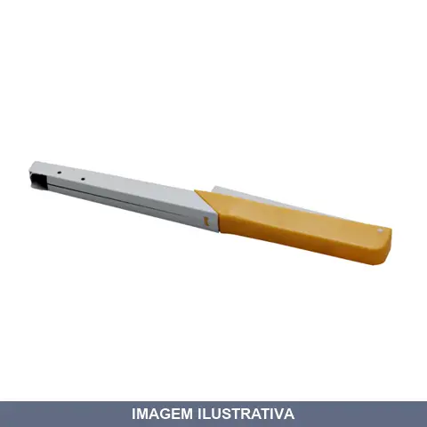
ACENDEDOR FOGAO FAISCA LUME
Indicação de Uso: Acender fogões a gás, fornos e aquecedores. Material e Resistência: Plástico e metal; acende mais de 3 mil vezes. Vantagem Prática: Acendimento por faísca sem produzir chama; compatível com qualquer marca e modelo de fogão a gás.
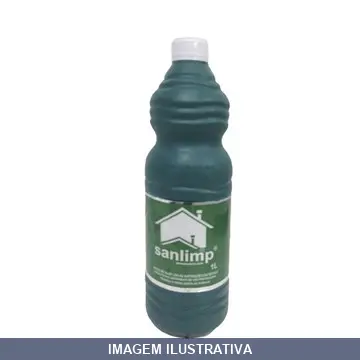
ACIDO MURIATICO LITRO SANLIMP 1
Desincrustante ácido para remoção de resíduos de cimento, rejunte e sujeiras resistentes em pisos, pedras e superfícies após reformas e construções. Composição: Ácido clorídrico e veículo. Diluir em água (proporção 3:1). Tempo de ação: 2 a 5 minutos. Contém produto fortemente ácido; causa queimaduras graves. Mantenha fora do alcance de crianças e use EPI.
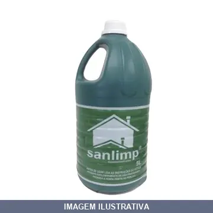
ACIDO MURIATICO LITRO SANLIMP 5
ACIDO PARA LIMPEZA SANLIMP 5 LITROS O Sanlimp é um desincrustante ácido indicado para remoção de resíduos de cimento e rejunte que ficam aparentes nos pisos em geral após reforma e construção, assim como remoção de resíduos resistentes. É recomendável fazer um teste numa pequena área da superfície a ser limpa, usando proporção de 3:1 (água:sanlimp), deixando agir de 2 a 5 minutos, lavando com bastante água em seguida. Nunca misturar o Sanlimp com outro tipo de produto de limpeza (cloro, água san
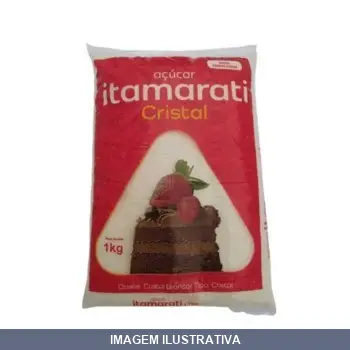
ACUCAR CRISTAL ITAMARATI
Açúcar cristal Itamarati em embalagem de 2 kg. Produto com cristais transparentes e uniformes, indicado para adoçar bebidas como café, chá e suco, ou para preparar receitas diversas. Apresentação em pacote de 2 kg.
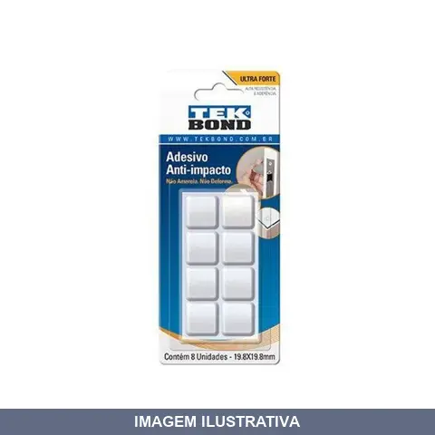
ADESIVO ANT-IMPACTO QUADRADO G COM TEK BOND
Indicação de Uso: Protetor de móveis, absorve impactos e protege contra riscos, batidas e deslizamentos. Material e Resistência: Adesivo à base de polímero etileno acetato de vinila, transparente, não deforma nem amarela. Vantagem Prática: 8 unidades por cartela, fácil aplicação com pressão.
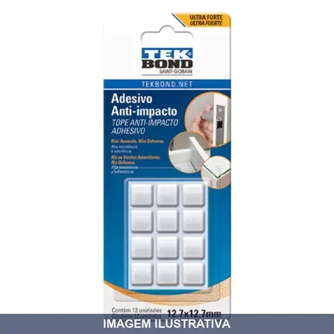
ADESIVO ANT-IMPACTO QUADRADO M COM TEK BOND
Indicação de Uso: Protetor anti-impacto para absorver impactos, batidas de portas, riscos e vibrações. Material e Resistência: Auto-adesivo com polímero etileno acetato de vinila, transparente, sensível à pressão. Não amarela nem deforma. Vantagem Prática: Cartela com 12 unidades. Colagem extraforte para superfícies limpas e secas.
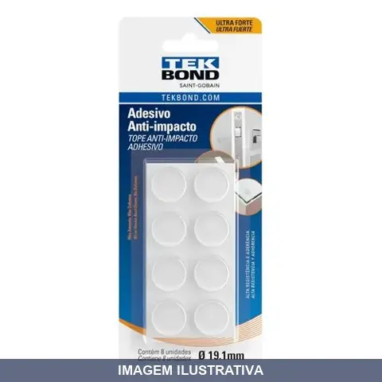
ADESIVO ANT-IMPACTO REDONDO M COM TEK BOND
Indicação de Uso: Proteção de móveis contra riscos, batidas e deslizamentos. Absorve impactos e reduz ruído. Aplicável em portas, móveis e utensílios domésticos. Material e Resistência: Adesivo à base de polímero etileno acetato de vinila. Sensível à pressão, ultra resistente, não amarela nem deforma com o tempo. Vantagem Prática: Auto-adesivo de fácil aplicação. Discreto e duradouro.
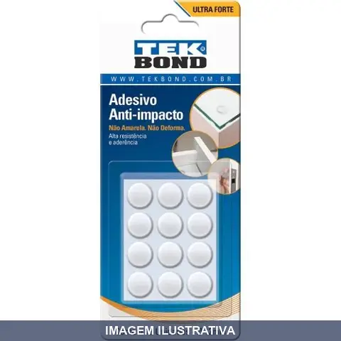
ADESIVO ANT-IMPACTO REDONDO P COM TEK BOND
Indicação de Uso: Protetor de móveis, utensílios domésticos e trabalhos de decoração. Absorve impactos de batidas de portas, riscos, barulhos e vibrações. Quantidade: 12 unidades. Material e Resistência: Auto-adesivo feito de plástico sensível a pressão, à base de polímero etileno acetato de vinila. Não amarela e não deforma. Cor: Transparente.
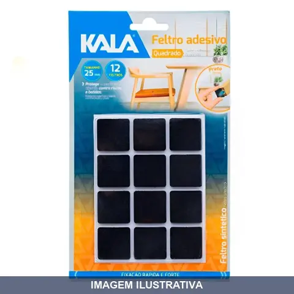
ADESIVO PROTETOR QUADRADO FELTRO PRETO COM KALA
Indicação de Uso: Protetor para cadeiras e móveis, evita riscos e marcas em paredes e pisos. Material e Resistência: Feltro adesivo com fixação rápida e forte. Vantagem Prática: Fácil aplicação e proteção eficiente.
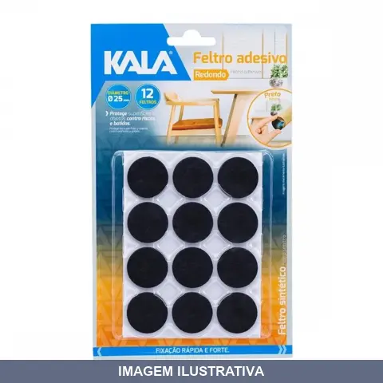
ADESIVO PROTETOR REDONDO FELTRO PRETO COM KALA
Indicação de Uso: Proteção de móveis e pisos. Pode ser utilizado em cadeiras e outros móveis para evitar riscos e marcas em paredes e pisos. Material e Resistência: Feltro com adesivo. Fixação rápida e forte. Protege superfícies e objetos contra riscos e batidas. Vantagem Prática: Fácil aplicação. Utilitário para ambientes com móveis.
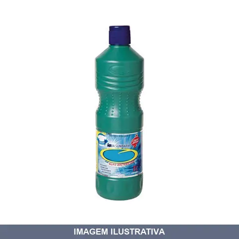
AGUA SANITARIA LITRO TUFF START 01
Indicação de Uso: Alvejamento de roupas, limpeza e desinfecção de superfícies em geral, pisos e ambientes. / Material e Resistência: Solução clorada de alta concentração bactericida. / Vantagem Prática: Ação desinfetante eficaz contra bactérias e vírus em superfícies diversas.
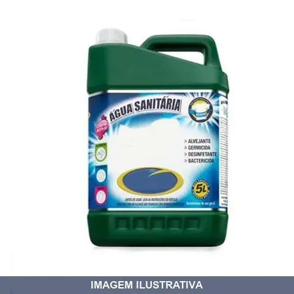
AGUA SANITARIA LITRO TUFF START 05
Indicação de Uso: Alvejamento de roupas, limpeza e desinfecção de superfícies em geral. / Material e Resistência: Solução clorada de alta eficácia. / Vantagem Prática: Ação desinfetante e bactericida para limpeza doméstica e industrial.
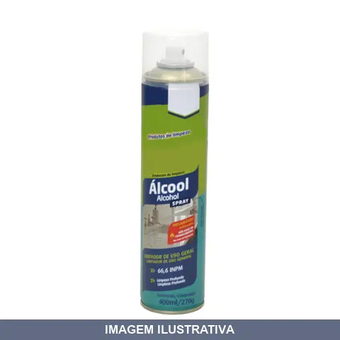
ALCOOL AEROSOL DOMLINE
Indicação de Uso: Limpeza geral de superfícies como vidros, espelhos, azulejos, fórmicas, metais e mármore. Material e Resistência: Álcool etílico 66,6% INPM com antioxidante, desnaturante e propelente. Vantagem Prática: Fácil aplicação e limpeza profunda, pronto para uso.
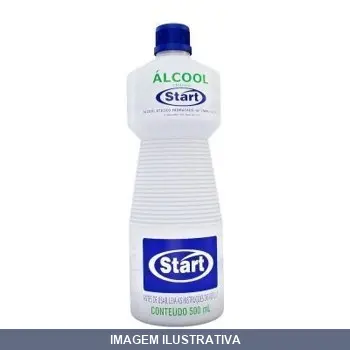
ALCOOL ETILICO HIDRATADO INPM START
Álcool etílico hidratado. Desinfetante hospitalar para superfícies fixas. Indicado para desinfecção.
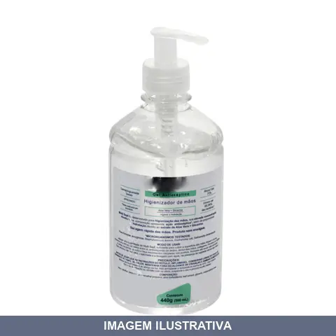
ALCOOL GEL ANTISSEPTICO PARA MAOS MILTI-SEPT
Indicação de Uso: Higienização e desinfecção das mãos como suplemento às lavagens rotineiras. Material e Resistência: Gel à base de álcool etílico 70%, desodorizado, com aloe vera. Vantagem Prática: Evapora rapidamente sem deixar odor residual, não necessita enxague, elimina 99,99% dos microrganismos.
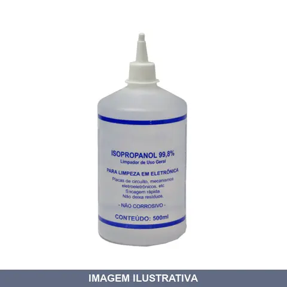
ALCOOL ISOPROPILICO IMPLASTEC
Álcool isopropílico indicado para limpeza, desinfecção e secagem de superfícies e componentes eletrônicos. Evapora rapidamente, deixando superfícies limpas e secas. Apropriado para manutenção e limpeza geral em ambientes industrial, comercial e doméstico.
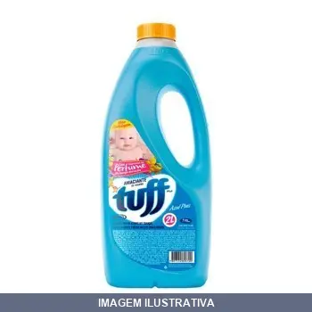
AMACIANTE DE ROUPAS TUFF PLUS START
Amaciante de roupas em apresentação líquida. Produto destinado ao tratamento e amaciamento de tecidos durante o processo de lavagem ou enxague. Facilita o pentear e manuseio das peças têxteis, reduzindo o ressecamento das fibras.
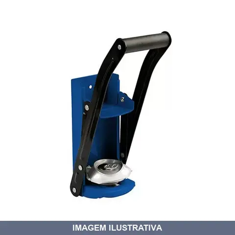
AMASSADOR DE LATA BRASFORT
Indicação de Uso: Amassador manual para compactação e redução de volume de latas de alumínio e aço. Ideal para reciclagem e economia de espaço em resíduos. Material e Resistência: Construído em material resistente para suportar esforço repetido de amassamento. Vantagem Prática: Facilita o armazenamento e transporte de latas descartáveis ao reduzir seu volume original.
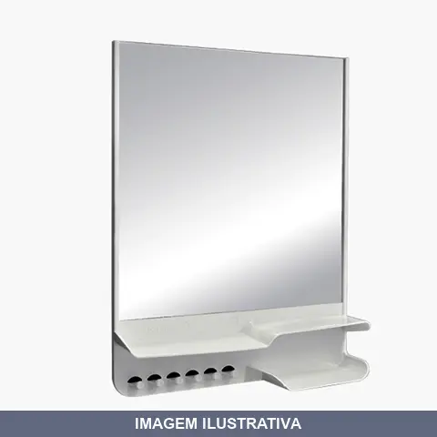
ARMARIO PARA BANHEIRO AE1 BRANCO ASTRA
Indicação de Uso: Para organização de itens de higiene pessoal no banheiro, com compartimentos específicos para porta-escova, pasta de dente e sabonete. Material e Resistência: Base plástica com espelho em toda a superfície. Leve, resistente e de fácil limpeza. Adequado para ambientes com umidade. Vantagem Prática: De sobrepor, já vai montado e acompanha kit de fixação (buchas e parafusos) para instalação simples na parede. Reversível, permite abertura para ambos
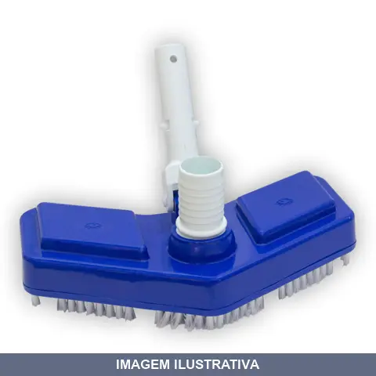
ASPIRADOR ASA DELTA PEQUENO BRUSTEC
Aspirador tipo asa delta dimensionado para trabalhos de pequeno porte. Indicado para limpeza de fundo e paredes de piscina, removendo sujeira e resíduos com auxílio de cabo e mangueira de aspiração. Estrutura resistente apropriada para uso doméstico e profissional leve. Facilita o transporte e armazenamento em espaços reduzidos.
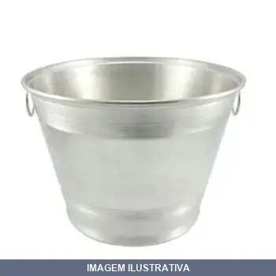
BALDE ALUMINIO GRANDE LITRO PLASTCOR
Indicação de Uso: Transporte e armazenamento de líquidos, materiais granulados e diversos fins domésticos e profissionais. Material e Resistência: Construído em alumínio, oferece excelente resistência à corrosão e maior leveza comparado a baldes plásticos convencionais, adequado para trabalhos contínuos. Vantagem Prática: Estrutura resistente e leve para manuseio facilitado em diferentes ambientes.
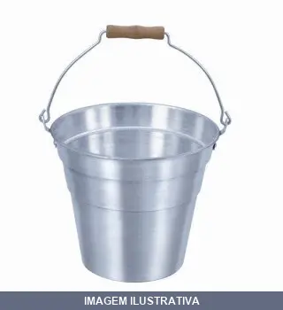
BALDE ALUMINIO PEQUENO LITRO PLASTCOR
Balde confeccionado em alumínio com capacidade de 5 litros. Possui alça de arame com cabo de madeira para transporte. Indicado para transporte e armazenamento de líquidos em geral, limpeza e uso doméstico.
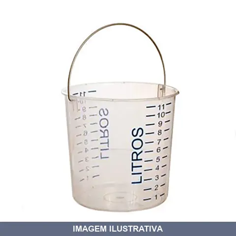
BALDE COM ESCALA LITRO BGP10 RF
Balde de polietileno com capacidade para 10 litros. Possui escala impressa com adesivo para medição e armazenamento de líquidos. Com alça para transporte e manuseio. Resistente a produtos químicos e aplicações diversas. Dimensões: 270 x 320 mm. Peso: 350 g. Cor transparente.
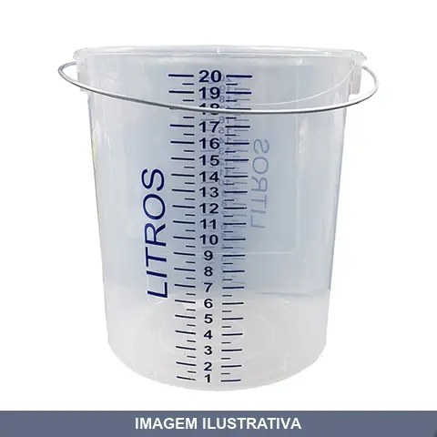
BALDE COM ESCALA LITRO BGP20 RF
Balde de polietileno de alta densidade com capacidade de 20 litros e escala de medição graduada em litros. Indicado para medir, misturar e transferir líquidos com precisão, incluindo combustíveis, óleos e produtos químicos. Equipado com alça para fácil manuseio e transporte. Resistente a impactos e variações de temperatura. Material reciclável.
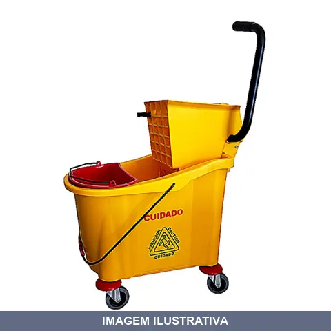
BALDE ESPREMEDOR AGUA PERFECT
PERFECT BALDE ESPREMEDOR 2 AGUAS Confeccionado em material super resistente, com rodas silenciosas e de alta qualidade. Ideal para hotéis, motéis e hospitais. Medidas:Capacidade: 33litros
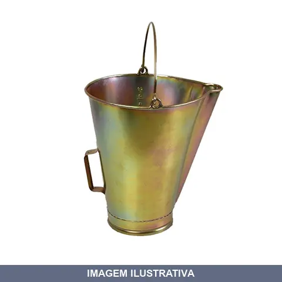
BALDE GRADUADO LTS BICROMATIZADO LUBEFER 10
Indicação de Uso: Recipiente para armazenamento e medição de líquidos em trabalhos de pintura, hidráulica e manutenção em geral. Material e Resistência: Construído em material bicromatizado, oferecendo proteção contra corrosão. Vantagem Prática: Graduação impressa permite medições precisas durante o trabalho.
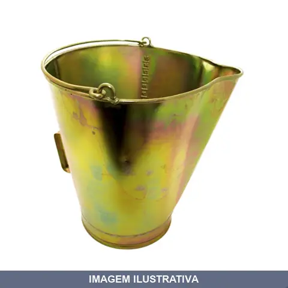
BALDE GRADUADO LTS BICROMATIZADO LUBEFER 15
Balde de ferro zincado com acabamento bicromatizado para medição e armazenamento de líquidos. Capacidade de 15 litros com escala graduada de 1 a 15 litros. Alças lateral e superior para transporte, bico para derramamento controlado. Indicado para produtos químicos como gasolina, óleo e solventes.
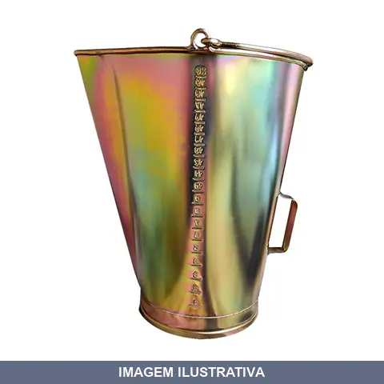
BALDE GRADUADO LTS BICROMATIZADO LUBEFER 20
Indicação de Uso: Armazenamento e medição de líquidos em aplicações industriais e domésticas. Material e Resistência: Construído em material bicromatizado, oferecendo proteção contra corrosão. Vantagem Prática: Graduações impressas facilitam medição precisa de volumes.
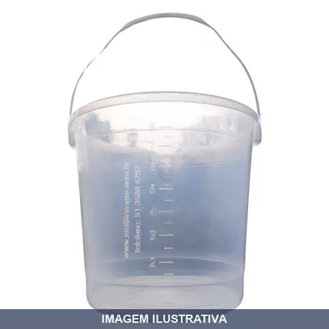
BALDE GRADUADO LTS PLASTICO COM BICO MULTITEC
Balde de plástico com capacidade de 8 litros, equipado com bico multiuso para despejo e medição. Indicado para armazenamento e transporte de líquidos e materiais diversos em aplicações domésticas e profissionais. Material plástico resistente. Graduações internas facilitam a medição de volumes.
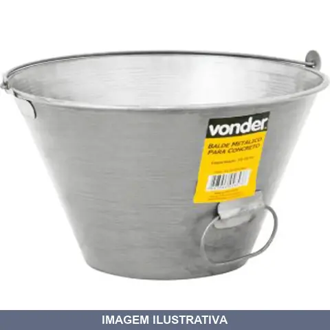
BALDE PARA CONCRETO CHAPA LITRO VONDER
Indicação de Uso: Construção civil, transporte e aplicação de concreto em volumes reduzidos. Material e Resistência: Fabricado em chapa metálica, galvanizado com acabamento envernizado preto, proporcionando maior resistência à corrosão. Possui alça lateral que facilita o manuseio e o despejo do material.
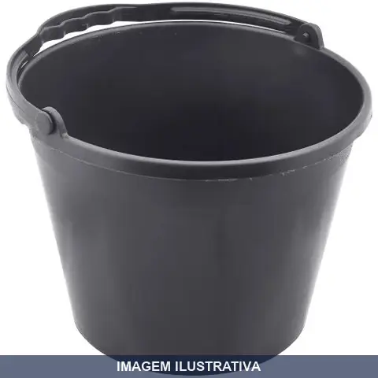
BALDE PARA CONCRETO PLASTICO LITRO AJAX
Indicação de Uso: Transporte e armazenamento de concreto e argamassa em obras e serviços de construção civil. Material e Resistência: Fabricado em plástico resistente. Vantagem Prática: Construção em plástico oferece leveza para manuseio em comparação a baldes metálicos tradicionais.
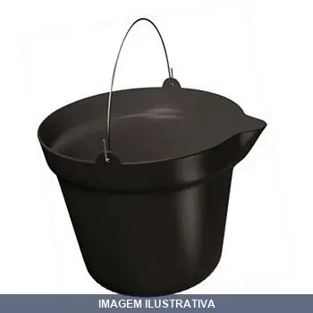
BALDE PARA CONCRETO PLASTICO LITRO ZUMPLAST
Indicação de Uso: Transporte e armazenamento de concreto, argamassa, areia e outros materiais na construção civil e atividades domésticas. Material e Resistência: Polipropileno. Estrutura reforçada com pegador no fundo do balde para facilitar despejo do conteúdo. Alça em aço galvanizado para transporte. Vantagem Prática: Balde leve e resistente, compacto para armazenamento.
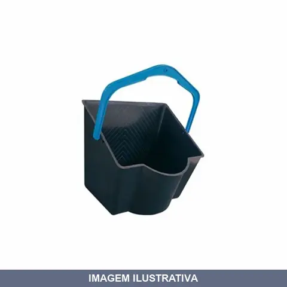
BALDE PINTURA LITRO ZUMPLAST
Indicação de Uso: Para transportar e aplicar tinta em obras, reformas e projetos de pintura. Material e Resistência: Fabricado em plástico resistente (polipropileno), com alças que auxiliam no transporte. Vantagem Prática: Design ergonômico facilita o transporte e aplicação, evitando desperdícios.
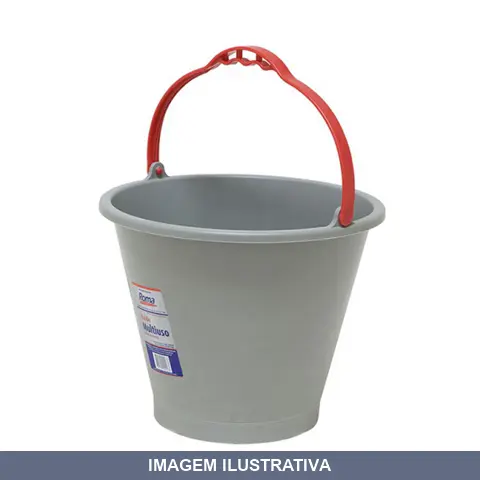
BALDE PLASTICO MULTIUSO LITRO 10
Indicação de Uso: Para carregar concreto, água e outros materiais. Material e Resistência: Plástico com reforço no fundo e lateral, cabo anatômico, resistência até 13Kg. Vantagem Prática: Fundo reforçado e design funcional para projetos de pintura, limpeza e armazenamento.
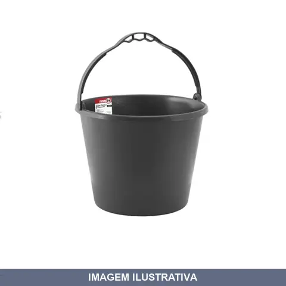
BALDE PLASTICO MULTIUSO LITRO 12
Indicação de Uso: Atividades domésticas, construção civil, colheitas e uso geral. Material e Resistência: Confeccionado em plástico, resistente a impactos. Vantagem Prática: Fundo plano para maior estabilidade; leve para facilitar manuseio.
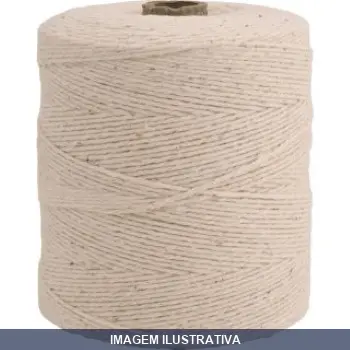
BARBANTE DE ALGODAO METROS VONDER
BARBANTE DE ALDODAO 4 X 4 COM 550 METROS Rolo de barbante com aproximadamente 550 m de comprimento Indicado para fazer artesanato, embalagens e amarrações em geral. Não utilizar para elevação/transporte de pessoas, cargas ou animais. Não utilizar em cadeiras suspensas, cabos de guia de segurança (linha de vida) ou na fixação de trava-quedas. Fabricado em 100% algodão
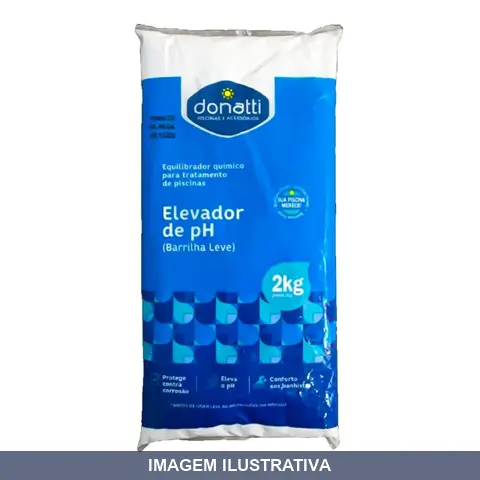
BARRILHA (HIDRO PH+) DONATTI
Indicação de Uso: Para elevar o pH da água da piscina, mantendo a faixa ideal entre 7,2 e 7,6 ppm. Aumenta a eficiência do cloro e evita irritações de pele e olhos. Material e Resistência: Carbonato de sódio (100%) Vantagem Prática: Dissolve rapidamente na água, permitindo ajustes precisos do pH. Simples de dosar e aplicar. Uso para piscinas residenciais e comerciais.
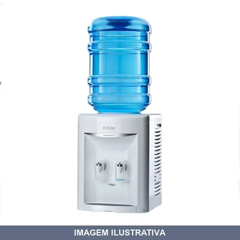
BEBEDOR GARRAFAO COMPACT BRANCO IBBL
Com seu design prático e compacto, o Bebedouro Compact é perfeito para residências, clínicas, escritórios e indústrias - serve a água natural ou gelada, acomodando garrafões de água de 10 ou 20 litros. DIFERENCIAIS Design prático e compacto Fácil instalação Refrigeração por compressor Baixo consumo de energia Água Natural e Gelada Acomoda Garrafões de 10 e 20 litros
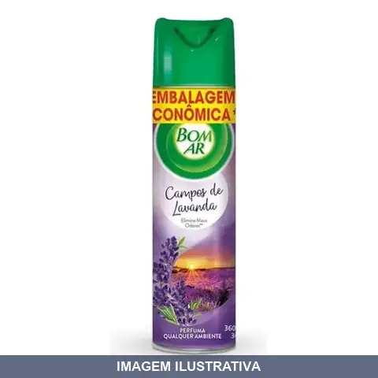
BOM AR LAVANDA GLADE AEROSSOL
PURIFICADOR BOM AR LAVANDA AERO 360ML ( CAIXA COM 12 UNIDADES )
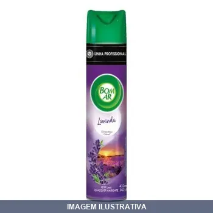
BOM AR LAVANDA PURO AR
Indicação de Uso: Neutralizador e odorizador de ambientes, recomendado para banheiros, quartos, salas e escritórios. Elimina odores desagradáveis e perfuma o ambiente. Vantagem Prática: Válvula dosadora controla a quantidade de fragrância dispensada. Fragrância de lavanda que deixa o ambiente perfumado. Pulverizável para aplicação direta.
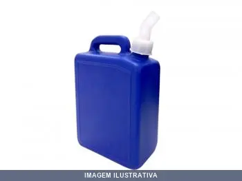
BOMBONA LITRO AZUL CIPLA
Bombona retangular de 5 litros na cor azul, fabricada com material plástico reciclado. Destinada ao armazenamento ou transporte de líquidos não potáveis. Acompanha tampulho (tampa) e bico dosador. Resiste à ação de agentes químicos e oferece fácil limpeza.
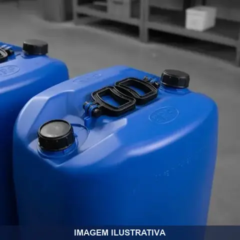
BOMBONA LITRO BOCAS ALCAS ROSIL
Bombona plástica com capacidade de 50 litros para armazenagem e transporte de produtos. Possui 2 bocais (bocas) para saída de líquido e respiro. Fabricada em PEAD (polietileno de alta densidade), oferece resistência química e a impactos. Equipada com 2 alças integradas ao corpo para facilitar manuseio e transporte. Tampa rosqueável com vedação para proteger o conteúdo. Adequada para acondicionamento de líquidos, alimentos, grãos e produtos de limpeza.
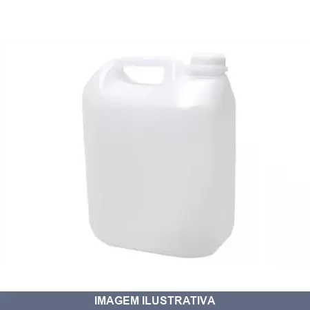
BOMBONA LITRO SAO GABRIEL
Indicação de Uso: Acondicionamento e armazenamento de líquidos diversos em ambientes industriais, comerciais e residenciais. Material e Resistência: Fabricado em plástico resistente, apropriado para produtos químicos e líquidos em geral. Vantagem Prática: Recipiente com capacidade de 5 litros, portátil e reutilizável, facilita transporte e armazenagem de fluidos.
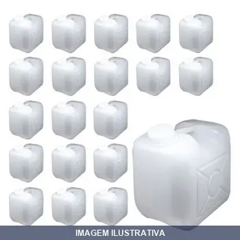
BOMBONAS QUADRADA LITRO ROSIL
Bombona quadrada de 30 litros para armazenamento e transporte de líquidos diversos. Formato quadrado que otimiza o espaço de armazenagem. Adequada para uso em ambientes comerciais e industriais. Construída em material resistente.
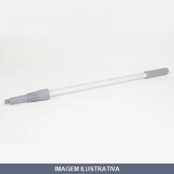
CABO ALUMINIO PARA VASSOURA ,40MT ROSCA PERFEC
Cabo de alumínio para vassoura com rosca tipo Perfec. Indicado para montagem e substituição de cabos em vassouras e similar. Material alumínio oferece leveza para manuseio. Rosca Perfec proporciona fixação segura no encaixe da vassoura.
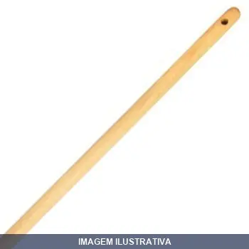
CABO MADEIRA PARA VASSOURA .20MT MINASUL
Cabo de madeira para vassoura e ancinho, com comprimento de 1,20 metro e diâmetro de 2,3 cm. Fabricado com madeiras mistas de resistência: Cumaru, Peroba, Garapeira, Libra, Jequitibá, Cedro e Angelim. Apropriado para fixação em vassouras e ancinhos de limpeza e jardinagem.
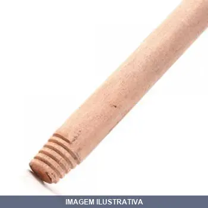
CABO MADEIRA PARA VASSOURA COM ROSCA ODIM
Cabo para vassoura fabricado em madeira com comprimento de 1,20 metros. Possui rosca de plástico resistente na ponta e haste para pendurar. Indicado para encaixe em vassouras e rodos de diversos tipos.

CABO MADEIRA PARA VASSOURA JULIA
Indicação de Uso: Cabo em madeira destinado à fixação e uso em vassouras e similares para limpeza e varredura. Material e Resistência: Confeccionado em madeira, material tradicional que oferece resistência ao uso contínuo. Vantagem Prática: Proporciona empunhadura firme e confortável durante o trabalho de limpeza.
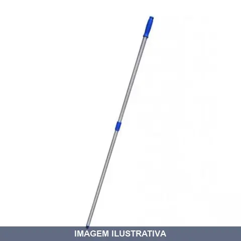
CABO TELESCOPICO MTS ESTRIADO DONATTI
Cabo telescópico estriado Donatti, fabricado em alumínio estriado com trava rápida. Extensível para limpeza de piscinas, permite alcançar áreas difíceis. Inclui trava e tampão na extremidade. Compatível com acessórios de limpeza como redes, escovas e aspiradores. Disponível em modelos de diferentes comprimentos (3 MTS e 6 MTS quando aberto).
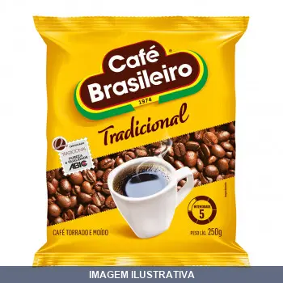
CAFE EM PO 250GR BRASILEIRO
16473-126 CAFE BRASILEIRO ALMOFADA FARDO 1 X 20 250G
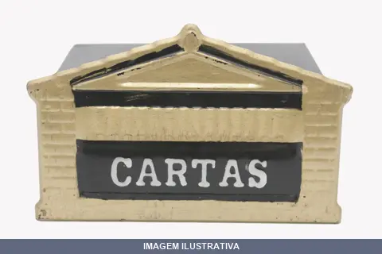
CAIXA CORREIO CASINHA GD MC
CAIXA CARTA MC001 CASINHA GRANDE NCM DA NF: 73101090
CAIXA CORREIO PVC AM POWER
Caixa de correio de PVC em plástico de alto impacto, modelo Power amarelo (AM). Pode ser fixada em grades, portões ou embutida em paredes. Acompanha parafusos para instalação. Protege correspondências contra intempéries e oferece facilidade na limpeza.
CAIXA CORREIO PVC CASINHA AMARELA POWER
Caixa de correspondência em PVC resistente, modelo casinha, cor amarela. Dimensões: 170mm (altura) x 240mm (largura) x 220mm (comprimento). Pode ser instalada embutida em alvenaria ou em portões. Acompanha parafusos de fixação. Mantém cartas e documentos protegidos de intempéries.
CERA LIQUIDA POLYLAR INCOLOR LITRO START
CERA LIQUIDA POLYLAR INCOLOR DE 5 LITROS ( CAIXA COM 4 UNIDADES) Indicada para qualquer tipo de piso pois forma uma camada de filme antiderrapante.
CLARIFICANTE LIQUIDO LITRO DONATTI
Indicação de Uso: Clarificante para tratamento e manutenção de água em piscinas, indicado para remover turbidez e agrupamento de partículas microscópicas suspensas. Material e Resistência: Contém cloridróxido de alumínio em formulação líquida, com ação microfloculante e de decantação que auxilia no processo de filtração. Vantagem Prática: Formato líquido facilita a aplicação e distribuição uniforme na piscina; agrega partículas para remoção eficaz pelo sistema de filtração.

CLORADOR FLUTUANTE GRANDE MARGARIDA DONATTI
Clorador flutuante para distribuição de pastilhas de cloro em piscina. Fabricado com polímeros de alto padrão de qualidade. Possui método de dosagem controlada através da abertura e fechamento das cavidades inferiores. Cesto coletor na base para reter resíduos de pastilha. Possibilita tratamento contínuo da água mesmo sem manutenção periódica regular.
CLORADOR FLUTUANTE MEDIO BRUSTEC
Clorador flutuante fabricado com polímeros de alto padrão. Possui método de dosagem controlada através de aberturas ajustáveis nas cavidades inferiores. Acomoda até 200g de pastilhas de cloro. Oferece distribuição uniforme do desinfetante na água, permitindo tratamento contínuo mesmo sem manutenção periódica. Garante comodidade e segurança na qualidade da água da piscina.
CLORO GRANULADO DONATTI 1,0 KG
Indicação de Uso: Desinfetante estabilizado para piscinas, atuando como desinfetante, algicida, clarificante e oxidante no tratamento da água. Material e Resistência: Cloro orgânico granulado à base de dicloro de sódio em triazina triona. Teor de cloro ativo: 33% a 40% p/p conforme formulação. Vantagem Prática: Apresentação em granulado facilita dosagem e aplicação. Rápida dissolução e ação imediata no tratamento da água. Mantém a piscina protegida para uso.
CLORO GRANULADO DONATTI 2,5 KG
Indicação de Uso: Desinfetante estabilizado para piscinas, atuando como desinfetante, algicida, clarificante e oxidante no tratamento da água. Material e Resistência: Cloro orgânico granulado à base de dicloro de sódio em triazina triona. Teor de cloro ativo: 33% a 40% p/p conforme formulação. Vantagem Prática: Apresentação em granulado facilita dosagem e aplicação. Rápida dissolução e ação imediata no tratamento da água. Mantém a piscina protegida para uso.
COADOR CAFE CABO MADEIRA
Indicação de Uso: Coador tradicional para preparar café coado, chás e outras infusões. Separa líquidos de partículas sólidas. Material e Resistência: Pano de algodão ou flanela com aro em aço galvanizado e cabo de madeira torneado. Reutilizável e resistente ao uso contínuo. Vantagem Prática: Pode ser lavado e reutilizado após cada uso. Dispensa filtros descartáveis.
COADOR CAFE CAFE BRASILEIRO
Indicação de Uso: Coador para café, adequado para filtração de bebida em residências e estabelecimentos. Material e Resistência: Fabricado em papel, resistente ao contato com líquidos quentes. Vantagem Prática: Facilita o preparo rápido de café coado, retendo partículas e oferecendo bebida sem resíduos.
CONCHA PARA CEREAIS INOX MARPAN
CONCHA PARA CEREAIS 100 GRAMAS -INOX Dimensões: (Boca x Fundo x Alt) 8,1 X 3,2 X 14,2 CM
COPO PLASTICO CAIXA COM PLASTDESC 050ML 5000
Indicação de Uso: Bebidas, alimentos e líquidos em geral. Ideal para eventos, confraternizações, bares, restaurantes e uso doméstico. Material e Resistência: Plástico resistente e rígido. Vantagem Prática: Descartável, higiênico e prático para uso único, eliminando necessidade de lavar. Embalagem com quantidade adequada para eventos e estabelecimentos comerciais.
COPO PLASTICO CAIXA COM PLASTDESC 180ML 2500
Indicação de Uso: Copos descartáveis para bebidas frias e quentes em bares, restaurantes, cafeterias e eventos. Material e Resistência: Plástico resistente, apropriado para uso único. Vantagem Prática: Embalagem com quantidade em caixa, ideal para estabelecimentos com alto volume de consumo.
CORRENTE PARA CAO SAO RAPHAEL
Corrente para cão indicada para controle e contenção de animais de estimação. Fabricada em material resistente, adequada para uso doméstico e segurança do animal. Oferece praticidade no passeio e manejo do cão.
CREOLINA CREO LINHA 900ML
Indicação de Uso: Desinfetante e desodorizante para limpeza de ambientes, superfícies e utensílios. Material e Resistência: Formulação líquida concentrada. Vantagem Prática: Elimina odores desagradáveis e reduz proliferação de microrganismos em áreas internas e externas.
CRISTALIZADOR DE VIDROS 100ML
Cristalizador líquido para vidros. Produto de aplicação direta em superfícies vítreas para limpeza e proteção. Uso recomendado em para-brisas automotivos, repelindo água e aumentando a visibilidade em dias de chuva. Apresentação em frasco de 100ml para aplicações pontuais e de fácil manuseio.
CUPINICIDA INCOLOR JIMO
Indicação de Uso: Produto específico para eliminar cupins em estruturas de madeira e demais materiais. Aplicável em ambientes internos e externos. Material e Resistência: Formulação incolor, adequada para aplicações onde a aparência visual é importante. Vantagem Prática: Permite tratamento de infestação por cupins sem deixar marcas visíveis na superfície tratada.
DESENGORDURANTE MAXIMOOM FLOTADOR ALCALINO LITRO START 02
Indicação de Uso: Desengordurante para limpeza e remoção de gordura em superfícies e equipamentos. Material e Resistência: Fórmula alcalina flotadora. Vantagem Prática: Remove gordura acumulada com eficiência, sendo adequado para limpeza geral em ambientes industriais e comerciais.
DESENGORDURANTE MAXIMOOM FLOTADOR ALCALINO LITRO START 05
Desengordurante alcalino indicado para limpeza e remoção de gordura em superfícies e equipamentos. Fórmula com ação flotadora que facilita a separação de resíduos gordurosos. Aplicação em limpeza industrial, manutenção de máquinas e equipamentos que acumulam gordura e óleo.
DESENTUPIDOR MANUAL PARA TUBO 3E COM NOLL
Indicação de Uso: Desobstrução de tubulações residenciais e comerciais. Material e Resistência: Construção em aço com comprimento de trabalho de 10 metros, adequado para tubos de 3 e 4 polegadas. Vantagem Prática: Ferramenta manual para limpeza e remoção de entupimentos sem necessidade de energia elétrica.
DESENTUPIDOR PIA 05002 CABO MADEIRA FLORINI
Indicação de Uso: Desentupidor manual para limpeza de tubulações de pia e ralos entupidos. Material e Resistência: Cabo em madeira, resistente ao uso contínuo. Vantagem Prática: Ferramenta simples e direta para desbloquear canos sem necessidade de produtos químicos.
DESENTUPIDOR SANFONADO PIA 05001 CABO PLASTICO FLORINI
Indicação de Uso: Desentupidor para pia com design sanfonado, indicado para desobstruir encanamentos residenciais. Material e Resistência: Cabo em plástico resistente. Vantagem Prática: Formato sanfonado facilita a limpeza de canos e ralos entupidos.
DESENTUPIDOR TUFAO I COM TUFAO
DESENTUPIDOR TUFAO I COM 5 METROS Tamanhos e Medidas 5m Componentes(s) Peça única Formas de Utilização Para uso doméstico Benefícios ao Consumidor Praticidade e beleza Garantia do Fornecedor Indeterminado

DESENTUPIDOR TUFAO II COM TUFAO
DESENTUPIDOR TUFAO II COM 10 METROS Tamanhos e Medidas 10m Componentes(s) Peça única Formas de Utilização Para uso doméstico Benefícios ao Consumidor Praticidade e beleza Garantia do Fornecedor Indeterminado
DESINFETANTE AZULIM LAVANDA START
DESINFETANTE PERFUMADO AZULIM LAVANDA 5 LITROS (CAIXA FECHADA COM 4 UNIDADES) Especial para limpeza e para proporcionar odores agradáveis em ambientes fechados.
DETERGENTE DE USO GERAL N- SUNIEX
Detergente neutro de uso geral biodegradável. Indicação de Uso: limpeza de latarias, para-brisas, carrocerias, superfícies pintadas de veículos automotores e pisos em geral. Vantagem Prática: concentração otimizada que limpa eficientemente sem atacar as superfícies. Diluir 5 litros em 200 litros de água.
DETERGENTE DESINGRUSTANTE ALCAL- (SOLUPAN) SUNIEX
AL-1005 DETERGENTE ALCALINO ( CAIXA FECHADA COM 4 UNIDADES DE 5 LITROS) SOLUPAN COR: AZUL AL-1005 DETERGENTE ALCALINO PRODUTO ALCALINO BIODEGRADÁVEL. UTILIZADO NA LIMPEZA E REMOÇÃO DE ÓLEO E GRAXA EM SUPERFÍCIES DE CHASSIS, RODAS, MOTORES EM CARROS, CAMINHOES, ONIBUS, TRATORES, COLHEITADEIRAS, MAQUINÁRIOS E VEÍCULOS AUTOMOTORES EM GERAL ALÉM DE PISOS RÚSTICOS.PRODUTO DE ALTA CONCENTRAÇÃO MAIS INDICADO PARA NA REMOÇÃO DE SUJIDADES ORGANICAS MAIS PESADAS PROPORCIONANDO MAIS ECONOMIA. DILUIR 5 LIT
DETERGENTE LAVA LOUCAS SPA NEUTRO START
Indicação de Uso: Limpeza e desengordurante de louças, talheres e utensílios de cozinha. / Vantagem Prática: Fórmula neutra que remove gordura e resíduos de alimentos sem danificar as mãos, adequado para uso doméstico e comercial.
DETERGENTE PROFISSIONAL DESINGRUST ACIDO AC- SUNIEX
Detergente profissional ácido biodegradável para limpeza e remoção de óxidos, ferrugem e sujidades inorgânicas em superfícies de alumínio. Indicado para chassis, rodas, motores e furgões de veículos automotores, tratores, colheitadeiras e maquinários em geral. Produto em alta concentração, recomenda-se diluir conforme necessidade de uso.
DETERGENTE START GRIL DILUIDO 1LT START
Detergente concentrado indicado para limpeza e desengraxe de churrasqueiras, grills e superfícies com acúmulo de gordura. Fórmula diluída pronta para uso. Apropriado para remoção de resíduos carbonizados e gordura queimada em equipamentos de cocção.
DETERGENTE START GRIL DILUIDO 5LT START
Detergente concentrado próprio para limpeza de grills e superfícies com gordura acumulada. Produto diluído, pronto para uso em limpeza pesada de equipamentos de cozinha. Indicado para remover resíduos de alimentos e gordura em churrasqueiras e grills.
DISPENSER SABONETE LIQ COM RESERVATORIO START
Indicação de Uso: Dispenser para sabonete líquido ou álcool gel, ideal para banheiros e áreas de higienização. Material e Resistência: Injetado em plástico ABS branco, com sistema de válvula e botão na cor branca. Vantagem Prática: Permite controle visual do nível do produto. Compatível com refil bag.
ESCOVA COM CABO NYLON COM VONDER 3
Indicação de Uso: Limpeza de peças em geral. Material e Resistência: Cerdas em nylon com cabo de plástico e base em metal. As cerdas limpam sem danificar as peças, oferecendo maior resistência à oxidação e corrosão. Vantagem Prática: Construção compacta e durável com 1 fileira de cerdas.
ESCOVA COM CABO NYLON COM VONDER 9
Indicação de Uso: Limpeza de peças em geral. Material e Resistência: Cerdas em nylon com cabo de plástico e base em metal. As cerdas limpam sem danificar as peças, oferecendo maior resistência à oxidação e corrosão. Vantagem Prática: Construção compacta e durável com 1 fileira de cerdas.
ESCOVA CURVA NYLON TRADICIONAL SOBRAMAR
Indicação de Uso: Para limpeza diária de piscinas de fibra, vinil e alvenaria, esfregar paredes, fundo e cantos. Material e Resistência: Cerdas de nylon com flexibilidade e resistência, haste curva injetada em PP. Vantagem Prática: Formato curvo facilita limpeza em áreas de difícil acesso e remoção de sujeira leve.
ESCOVA PEGA BEM ODIM
Escova com pega ergonômica, indicada para limpeza geral de superfícies, remoção de sujeira e poeira em ambientes internos e externos. Estrutura resistente com cerdas apropriadas para uso repetido. Prática e funcional para trabalhos de limpeza doméstica e profissional.
ESCOVA PLASTICA ODIM
Indicação de Uso: Limpeza e escovação de superfícies, remoção de sujidade, pó e resíduos em ambientes e objetos diversos. Material e Resistência: Cerdas de plástico resistente, estrutura robusta para uso doméstico e comercial. Vantagem Prática: Fácil limpeza e manutenção das cerdas, durabilidade prolongada com resistência ao uso contínuo.
ESCOVA RETA NYLON SOBRAMAR
Indicação de Uso: Limpeza geral de superfícies, paredes, pisos e fundos em ambientes domésticos e comerciais. / Material e Resistência: Corpo em ABS com cerdas de nylon densidade média, resistente e durável. / Vantagem Prática: Ferramenta versátil para remoção de sujeira leve em diversas aplicações de limpeza.
ESCOVA SANITARIA COM POTE ODIM
Escova sanitária com cerdas de nylon e pote em polipropileno para limpeza de vasos sanitários. Componentes resistentes a produtos químicos e ambientes úmidos. Pote incluso permite armazenamento higiênico evitando contato com o chão.
ESCOVA SANITARIA SEM POTE JULIA
Escova sanitária sem pote, destinada à limpeza e higienização de vasos sanitários e superfícies do banheiro. Ideal para uso doméstico e comercial. Vendida sem recipiente de armazenamento.
ESPANADOR FIO WALTINHO
Indicação de Uso: Limpeza e remoção de poeira em superfícies, móveis, decorações e ambientes. Material e Resistência: Estrutura com fios que proporcionam flexibilidade e durabilidade no uso contínuo. Vantagem Prática: Alcança áreas de difícil acesso e superfícies delicadas sem danificar.
ESPANADOR PENA AVASTRUZ FLORINI
Indicação de Uso: Limpeza e remoção de poeira em superfícies diversas, móveis e objetos delicados. Material e Resistência: Confeccionado em pena de avestruz, oferece maciez e durabilidade para limpezas frequentes. Vantagem Prática: Ideal para ambientes que requerem cuidado, captura eficiente de poeira sem riscar superfícies.
ESPANADOR PENA TB
Indicação de Uso: Limpeza e remoção de poeira em superfícies, móveis, objetos e ambientes diversos. Material e Resistência: Confeccionado em pena natural, estrutura resistente. Vantagem Prática: Proporciona limpeza suave sem danificar superfícies delicadas.
ESPIRITEIRA A ALCOOL ROA
Indicação de Uso: Aquecimento de panelas, rechaud e marmitas. Indicado para camping, pesca e uso portátil. Material e Resistência: Construído em chapa de ferro pintada. Acompanha abafador de segurança para controle da chama. Capacidade do reservatório de 100ml, utiliza álcool gel ou líquido acima de 65%. Vantagem Prática: Funcionamento econômico, portátil e compacto. Aquecimento rápido com chama controlável. Garantia de fábrica de 90 dias.
ESPONJA DE MICROFIBRA VONDER
ESPONJA DE MICROFIBRA MULTIUSO VONDER Indicada para limpeza automotiva e doméstica Desenvolvida em microfibra, proporcionando alta resistência e poder de absorção. Sua composição permite que absorva muito mais água que um pano de algodão comum.
ESPONJA DUAS FACES 3M
ESPONJA WAVE (CAIXA MOST COM 60 PEÇAS ) A Esponja Multiuso Scotch-Brite é a solução ideal para remoção de sujeiras difíceis nos mais diversos tipos de superfície. Benefícios Utilizada tanto para limpeza pesada (manta verde) quanto para superfícies mais delicadas (parte amarela). Dura até 4 semanas. Alto poder de limpeza.
ESPONJA MAGICA COM TEK BOND
Indicação de Uso: Remove manchas, riscos e sujeiras em paredes, vidros, espelhos, cerâmicas, pisos e mesas de madeira, interruptores, marcas de lápis de cor e pincel atômico. Material e Resistência: Esponja de plástico expandido à base de melamina. Limpa apenas com água, sem necessidade de produtos químicos ou detergentes. Vantagem Prática: Não deixa resíduos, exige pouco esforço e é ecológica.
ESPONJAO LIMPA MAIS ODIM
ESPONJAO LIMPA MAIS (CAIXA FECHADA COM 24 UNIDADES) Dimensões: 22 x 13,5 x 6,5 cm. Para limpar lataria de veículos e rebocos na construção civil.
ESPUMA LIMPA TUDO TEK BOND
Indicação de Uso: Limpeza geral de superfícies, remove sujeira, gordura e resíduos de diversos materiais. Aplicável em ambientes internos e externos. Material e Resistência: Espuma de limpeza em aerossol, compatível com a maioria das superfícies convencionais. Vantagem Prática: Aplicação prática e rápida, alcança áreas de difícil acesso, dispensa diluição prévia.
ESPUMA MAGICA LIMPA ESTOFADO TECBREIL M500/DOM
LIMPA ESTOFADOS M500 12 X 300ML/200GR ONU 1950 AEROSSOIS 2.1 (23)
ESTANTE COM GAVETA PRESTO
Indicação de Uso: Organização de parafusos, porcas, arruelas, componentes eletrônicos e peças pequenas em ambientes comerciais, industriais ou domésticos. Material e Resistência: Estrutura em aço com tratamento antiferruginoso e pintura eletrostática a pó. Gavetas em polipropileno removíveis e empilháveis. Vantagem Prática: Produto desmontável com fácil transporte. Gavetas com porta etiquetas para identificação. Ocupa até 70% menos espaço que estantes convencionais.
ESTOJO MULTIUSO EP EMIFRAN
Estojo multiuso fabricado em polipropileno de alta resistência. Conta com 12 compartimentos: 3 divisórias centrais fixas e 9 reguláveis, permitindo personalizar o espaço interno conforme necessidade. Possui alça para transporte. Indicado para organização e armazenamento de iscas, AccessManager pequenas, miçangas, peças de artesanato e diversos outros itens. Material resistente ao desgaste do transporte e uso frequente.
ESTOPA COSTURADA VAPT
Indicação de Uso: Limpeza, secagem e polimento de superfícies em geral. Material e Resistência: Fibra têxtil costurada, confeccionada em algodão reciclado. Vantagem Prática: Absorção de umidade e facilidade de uso em trabalhos de limpeza e acabamento.
ESTOPA PARA LIMPEZA SACO COM VAPT
Estopa 100% algodão em saco. Indicada para polimento e limpezas em geral. Apropriada para uso em polimento, limpeza e manutenção geral em diversos ambientes e aplicações.
ESTOPA POLIMENTO BRANCA VAPT
Indicação de Uso: Polimento e acabamento de superfícies. Material e Resistência: Estopa branca, apropriada para trabalhos de polimento fino. Vantagem Prática: Ideal para aplicação em máquinas de polir e trabalhos manuais de acabamento.
EXTERMIX
Indicação de Uso: Produto de uso externo para controle de pragas e insetos. Material e Resistência: Formulação líquida em apresentação concentrada. Vantagem Prática: Facilita aplicação controlada em áreas afetadas por infestação.
FACA CABO MADEIRA TRAMONTINA
FACA COZINHA / PEIXEIRA AÇO CARBONO 6 CABO DE MADEIRA 22950/006 Lâmina em aço carbono com fio liso. Cabo de madeira fixado por rebites de alumínio.
FACA PARA LEGUMES TRAMONTINA
Faca para legumes e frutas da linha Plenus. Lâmina em aço inox com tratamento térmico, garantindo resistência e durabilidade. Cabo em polipropileno preto. Indicada para cortar, descascar e fazer cortes delicados em alimentos. Proporciona conforto e praticidade na preparação de refeições.
FELTRO QUADRADO PRETO COM TEK BOND 22MM 16
Indicação de Uso: Proteção e acabamento de superfícies, vedação de frestas e absorção de impactos em móveis, máquinas e equipamentos. Material e Resistência: Feltro preto que oferece resistência ao desgaste. Vantagem Prática: Fácil aplicação e reutilizável em diversas aplicações.
FELTRO QUADRADO PRETO COM TEK BOND 30MM 12
Indicação de Uso: Proteção, amortecimento e isolamento em superfícies, móveis e equipamentos. Indicado para acabamento e proteção de objetos. Material e Resistência: Feltro preto, material têxtil durável para uso geral. Vantagem Prática: Fácil aplicação e reutilizável em diferentes superfícies.
FELTRO REDONDO PRETO COM TEK BOND 20MM 24
Indicação de Uso: Proteção, amortecimento e acabamento em superfícies. Aplicável em móveis, máquinas, equipamentos e trabalhos de acabamento. Material e Resistência: Feltro em cor preta, formato redondo. Vantagem Prática: Reduz impactos e vibrações, protege superfícies de riscos e deslizamento.
FELTRO REDONDO PRETO COM TEK BOND 35MM 08
Indicação de Uso: Proteção de pisos e móveis, evita arranhões e ruídos ao deslizar objetos. Material e Resistência: Feltro preto de durabilidade apropriada para trabalhos contínuos. Vantagem Prática: Formato redondo facilita aplicação sob pés de cadeiras, mesas e outros móveis.
FIBRA LIMPEZA GERAL VERDE PERFEC
Indicação de Uso: Limpeza geral de superfícies como pisos, azulejos, utensílios de cozinha, equipamentos e bancadas em ambientes residenciais e comerciais. Material e Resistência: Manta não tecido composta por fibras sintéticas aglutinadas com resina, impregnada com mineral abrasivo. Resistente à umidade e não biodegradável. Vantagem Prática: Eficiente na remoção de sujeira e resíduos com durabilidade prolongada.
FIBRA LIMPEZA PESADA PARA SUPORTE 01057 RODOFLEX
Indicação de Uso: Limpeza pesada e remoção de resíduos em superfícies diversas. Material e Resistência: Fibra de alta abrasividade, resistente ao desgaste em aplicações intensivas. Vantagem Prática: Proporciona limpeza eficiente em trabalhos que exigem maior poder abrasivo.

FIBRA USO GERAL PARA SUPORTE 01056 RODOFLEX
Fibra abrasiva de uso geral para suporte de limpeza. Composta de manta não tecida de fibras sintéticas unidas por resina de alta resistência. Indicada para limpeza em azulejos, pisos, panelas, assadeiras, louças e diversas superfícies, substituindo a lã de aço. Totalmente polimerizada, não deixa resíduos.
FLANELA BRANCA COM UND TEXTIL
Flanela branca para limpeza e polimento. Tecido em algodão puro, macio e absorvente, indicado para limpar, lustar e secar diferentes superfícies. Material resistente e durável, apropriado para limpeza de vidros, móveis e acabamentos diversos.
FLANELA LARANJA COM UND TEXTIL
Flanela na cor laranja para limpeza, secagem e polimento de superfícies. Tecido absorvente e macio indicado para uso em obras, manutenção e limpeza geral. Embalagem contém 12 unidades.
FOGAO BOCA CAMPER SUZAN
Fogão portátil de 2 bocas para uso em camping e atividades outdoor. Queimadores com ignição manual. Funciona com gás combustível em cilindros de baixa pressão. Adequado para preparação de alimentos em ambientes externos e acampamentos.
FOGAO BOCA ROA
Fogão semi-industrial ROA para mesa, 1 boca de alta pressão. Construído em chapa de ferro pintada. Possui 4 caulins (bicos espalhadores de chamas), 1 registro de fechamento e pintura eletrostática. Funciona com gás GLP (botijão). Requer mangueira e registro normalizados para alta pressão. Ideal para quiosques, lanchonetes e carrinhos de lanche.
FOGAREIRO 800WX RESISWAL
Indicação de Uso: Aquecimento e cocção de alimentos em ambientes internos e externos. Material e Resistência: Resistência elétrica de alta durabilidade para uso doméstico e comercial. Vantagem Prática: Portátil e prático para preparação rápida de refeições.
FOGAREIRO BOCAS KALA
Fogareiro a gás com 2 queimadores independentes. Estrutura em aço com revestimento anticorrosivo e pintura eletrostática. Queimadores de fácil reposição. Funciona com registro de alta pressão. Resistente ao vento e com bom poder de cozimento. Indicado para camping, pesca e áreas externas.
FOGAREIRO COM BORDA E TRIPE KALA
Fogareiro portátil com tripé desmontável e borda, ideal para camping, acampamentos e cozimento em ambientes externos. Estrutura em aço carbono com revestimento zincado. Acompanha mangueira com registro. Consulte o manual do fabricante para identificar o tipo de combustível compatível (álcool, gás ou gasolina) e instruções de operação específicas.
FOSFORO UND PINHEIRO
Indicação de Uso: Para acender fogões, churrasqueiras, lareiras, velas e incensos. Material e Resistência: Fósforo, clorato de potássio e aglutinantes. Caixa em madeira com lixa tradicional. Palitos de alta resistência com acendimento preciso e seguro. Vantagem Prática: Fósforo de segurança que não deixa brasa após a chama se extinguir, garantindo segurança no uso.
FRISO PARA PORTA ALUMINIO NOVO HORIZONTE
Indicação de Uso: Vedação de portas contra correntes de ar, chuva, insetos, poeira e umidade. Material e Resistência: Fabricado em alumínio liga 6060, com borracha flexível e durável. Resistente a corrosão e não propaga fogo. Acompanha parafusos para instalação. Vantagem Prática: Impede a entrada de ar frio, ruído, umidade e poeira, proporcionando maior conforto e proteção para residências e ambientes comerciais.
FUNIL ALUMINIO CAMINHAO/TRATOR SEM TELA LUBEFER
Indicação de Uso: Transferência de óleo e combustíveis para caminhões e tratores, especialmente em oficinas mecânicas e postos de abastecimento. Material e Resistência: Fabricado em alumínio com alça soldada, resistente à corrosão e adequado para fluidos automotivos. Vantagem Prática: Sem tela, com alça para facilitar o manuseio e transferência de líquidos.
FUNIL ALUMINIO USO GERAL GRANDE DUAS CURVAS LUBEFER
Indicação de Uso: Funil de uso geral para transferência de líquidos e granulados em trabalhos diversos. / Material e Resistência: Fabricado em alumínio, oferece leveza e durabilidade. Possui duas curvas que facilitam o direcionamento do fluxo. / Vantagem Prática: Design funcional com duas curvas para maior controle no despejo de materiais.

FUNIL ALUMINIO USO GERAL GRANDE LUBEFER
Indicação de Uso: Funil de uso geral para transferência de líquidos e materiais diversos em ambientes industriais, comerciais e domésticos. / Material e Resistência: Alumínio resistente e durável. / Vantagem Prática: Facilita o despejo preciso de fluidos, óleos e outros produtos sem derramamentos.
FUNIL ALUMINIO USO GERAL PEQUENO LUBEFER 155MM
Indicação de Uso: Transferência de óleos lubrificantes, combustíveis e derivados de petróleo em aplicações automotivas e industriais. Material e Resistência: Fabricado em alumínio, material leve e resistente à corrosão, com alça integrada para manuseio seguro. Vantagem Prática: Design prático e funcional que direciona o fluxo de líquidos com precisão, facilitando o despejo em recipientes sem derramamentos.
FUNIL ALUMINIO USO GERAL PEQUENO LUBEFER 155MM [003493]
Indicação de Uso: Transferência de líquidos em geral, pós, grãos e materiais granulados em aplicações domésticas, comerciais e industriais. Material e Resistência: Fabricado em alumínio, resistente e leve, com alça integrada para manuseio seguro. Vantagem Prática: Design funcional que facilita o direcionamento e controle do fluxo de materiais, proporcionando praticidade nas transferências diversas.
FUNIL ALUMINIO USO GERAL UMA CURVA LUBEFER
Indicação de Uso: Transferência de líquidos em geral, como óleos, combustíveis e fluidos diversos, evitando respingos e contaminação. Material e Resistência: Fabricado em alumínio com alça reforçada. Vantagem Prática: Direciona o fluxo de líquidos com precisão, ideal para aplicações automotivas e industriais.
FUNIL ALUMINIO VOLKS LUBEFER
Indicação de Uso: Transferência e direcionamento de líquidos em aplicações de lubrificação e manutenção. Material e Resistência: Alumínio, resistente à corrosão e adequado para uso com óleos e lubrificantes. Vantagem Prática: Facilita o abastecimento preciso de sistemas de lubrificação, evitando derramamentos.
FUNIL POLIETILENO COM EXTENSAO FLEX FPEF RF
FPEF160 - FUNIL COM EXTENSAO FLEXIVEL 160MM POLIETILENO
FUNIL POLIETILENO COM EXTENSAO REG FPER2C RF
FPER2C160- FUNIL COM EXTENSAO RIGIDA 160MM 2 CURVAS POLIETILENO

FUNIL POLIETILENO RETO FPR 100MM
Indicação de Uso: Transferência de água, óleos, combustíveis e produtos ácidos em aplicações domésticas, automotivas e industriais. Material e Resistência: Fabricado em polietileno resistente, oferece durabilidade, resistência a impactos e facilidade de limpeza. Vantagem Prática: Design reto proporciona fluxo contínuo e seguro, evitando derramamentos. Material leve permite fácil manuseio e transporte.

FUNIL POLIETILENO RETO FPR 120MM
Indicação de Uso: Transferência de água, óleos, combustíveis e produtos ácidos em aplicações domésticas, automotivas e industriais. Material e Resistência: Fabricado em polietileno resistente, oferece durabilidade, resistência a impactos e facilidade de limpeza. Vantagem Prática: Design reto proporciona fluxo contínuo e seguro, evitando derramamentos. Material leve permite fácil manuseio e transporte.

FUNIL POLIETILENO RETO FPR 150MM
Indicação de Uso: Transferência de água, óleos, combustíveis e produtos ácidos em aplicações domésticas, automotivas e industriais. Material e Resistência: Fabricado em polietileno resistente, oferece durabilidade, resistência a impactos e facilidade de limpeza. Vantagem Prática: Design reto proporciona fluxo contínuo e seguro, evitando derramamentos. Material leve permite fácil manuseio e transporte.
FUNIL POLIETILENO RETO FPR 2103
Indicação de Uso: Transferência e direcionamento de líquidos e materiais granulados em aplicações domésticas e industriais. Material e Resistência: Fabricado em polietileno, apresenta resistência química e durabilidade para uso contínuo. Vantagem Prática: Formato reto facilita encaixe direto em recipientes e canaletas, evitando derramamentos durante o manuseio.
FUNIL POLIETILENO RETO FPR 75MM
Indicação de Uso: Transferência de água, óleos, combustíveis e produtos ácidos em aplicações domésticas, automotivas e industriais. Material e Resistência: Fabricado em polietileno resistente, oferece durabilidade, resistência a impactos e facilidade de limpeza. Vantagem Prática: Design reto proporciona fluxo contínuo e seguro, evitando derramamentos. Material leve permite fácil manuseio e transporte.

FUNIL POLIETILENO RETO FPRT RF
Funil em polietileno com design reto para transferência de fluidos. Aplicado em abastecimento de óleos e combustíveis, oferece resistência a ácidos, bases e produtos químicos comuns. Pode ser equipado com peneira integrada para filtragem adicional. Durável e resistente ao impacto.
GANCHO ADESIVO GRANDE KALA
Gancho adesivo de grande tamanho com capacidade de suporte de até 2kg. Fixação por adesivo, ideal para pendurar objetos em paredes sem necessidade de furos ou parafusos. Indicado para uso em ambientes internos com superfícies lisas e limpas.
GANCHO ADESIVO MEDIO KALA
Gancho adesivo para fixação em superfícies lisas sem necessidade de furos ou parafusos. Resistência de até 1,5kg. Indicado para pendurar toalhas, roupas, utensílios e objetos leves em banheiros, cozinhas e áreas internas. Instalação prática e rápida com adesivo.
GANCHO ADESIVO PEQUENO KALA
Gancho adesivo para fixação em superfícies lisas. Utilizado para pendurar objetos leves em paredes, espelhos, vidros e azulejos sem necessidade de furação. Material adesivo que adere por pressão.
GANCHO ADESIVO SCOTCH GRANDE 3M
Gancho adesivo de tamanho grande para fixação sem furos em superfícies lisas. Material adesivo forte que permite pendurar objetos diversos sem necessidade de pregos ou parafusos. Indicado para uso em paredes, azulejos e móveis.
GANCHO ADESIVO SCOTCH PEQUENO 3M
Indicação de Uso: Organização e fixação permanente de objetos em ambientes internos. Material e Resistência: Fabricado com polietileno e espuma acrílica laminada com adesivo de fixação permanente. Suporta até 0,5 kg por gancho. Contém 4 unidades brancas. Vantagem Prática: Instalação sem ferramentas, pregos ou parafusos. Aplicação em superfícies lisas como paredes, azulejos, madeira, metal e vidro.
GANCHO ADESIVO SCOTCH UTILIDADES 3M
Gancho adesivo com fita de fixação permanente, desenvolvido para organizar e pendurar utensílios em ambientes internos. Indicação de Uso: Ideal para pendurar vassouras, rodos, talheres e demais objetos leves a médios. Material e Resistência: Fabricado com poliestireno e adesivo à base de borracha sintética, suporta até 3,5 kg em superfícies lisas. Vantagem Prática: Instalação sem pregos, parafusos ou ferramentas, permitindo aplicação direta em paredes, vidro, cerâmica e azulejos após limpeza

GARRAFA . LITRO BRANCA UNITERMI
Garrafa térmica com ampola de vidro e corpo em plástico injetado. Superfície polida para fácil limpeza. Alça reforçada e bico anti-pingo. Mantém bebidas quentes por 12 horas e geladas por 24 horas. Conforme norma ABNT NBR 13282.
GARRAFA . LITRO INOX 01 8
GARRAFA AIRPOT INOX SLIM 1,8L PRETA REF:100197400105 Práticas e resistentes, as garrafas térmicas Air Pot Inox New Invicta possuem acabamento externo em aço inoxidável e ampola de vidro. O Modelo Air Pot Inox New é ideal para uso doméstico ou institucional, pois conservam líquidos quentes e frios. Seu sistema de servir com acionamento por pressão é perfeito para uso constante, minimizando a perda de temperatura. Possui alça retrátil para transporte com praticidade.
GARRAFA . LITRO INOX 01 8 [019370]
Garrafa térmica em aço inoxidável com capacidade de 1,8 litro. Indicada para manter bebidas quentes ou frias durante o dia. Material resistente à corrosão e durável. Prática para transporte e armazenamento de líquidos em ambientes de trabalho, piqueniques e atividades ao ar livre.
GARRAFA . LITRO PRETA INVICTA
GARRAFA AIR POT PP 1,8 L PRETA Garrafa Térmica Airpot PP 1,8L REF:100297580105 A garrafa térmica Invicta Air Pot PP possui capacidade diferenciada, sistema de acionamento de presão e alça retrátil para transportepara maior praticidade e segurança. Ideal para uso doméstico ou institucional, possue ampola de vidro e conserva líquidos quentes e frios com maior durabilidade.
GARRAFA . LITRO PRETA UNITERMI
Garrafa térmica preta com capacidade de 1,8 litro. Indicada para armazenamento e transporte de bebidas quentes ou frias. Material resistente adequado para uso doméstico, comercial e em atividades externas. Mantém a temperatura do líquido por período prolongado.

GARRAFA . LITRO VERDE UNITERMI
Garrafa térmica para armazenamento e transporte de líquidos. Material resistente em cor verde. Indicada para manter bebidas em temperatura controlada em ambientes de trabalho, residencial ou lazer.

GARRAFA . LITRO VERMELHA UNITERMI
GARRAFA TERMICA MESA VERONA PRESSAO 1,8 L VERMELHA
GARRAFA LITRO AZUL ALCA LATERAL INVICTA
Indicação de Uso: Armazenamento e transporte de líquidos em geral, ideal para uso doméstico e comercial. Material e Resistência: Plástico resistente, cor azul. Vantagem Prática: Alça lateral para transporte e manuseio seguro do recipiente.
GARRAFA LITRO AZUL INVICTA 03
Garrafa térmica para armazenamento e transporte de líquidos. Mantém bebidas quentes ou frias durante o dia. Ideal para trabalho, atividades ao ar livre e uso doméstico. Corpo resistente em material durável.
GARRAFA LITRO AZUL INVICTA 09
REC TERMICA 9L TRIPLE AZUL ROYAL Botijão Térmico 9,0L REF: 101487091201 O botijão térmico com tripé retrátil Invicta possui design clean, bocal largo, alça embutida para facilitar o transporte. Ideal para conservar líquidos quentes e frios por mais tempo. Composição: PEAD com isolamento em PU.

GARRAFA LITRO COM TAMPA AZUL UNITERMI
Garrafa com tampa azul, adequada para armazenamento e transporte de bebidas. Tampa com dupla função que serve como copo. Apresenta alça para facilitar o transporte e sistema antigota. Fabricada com corpo em vidro e componentes em plástico.

GARRAFA LITRO COM TAMPA PRETA UNITERMI
Garrafa térmica com ampola de vidro e estrutura em plástico injetado PP. Tampa de rosca que funciona como copo, sistema antigota, alça reforçada e superfície polida. Mantém bebidas quentes por até 8 horas e geladas por até 12 horas. Indicação de Uso: Consumo de bebidas quentes e frias em diversos ambientes. Material e Resistência: Ampola de vidro com isolamento térmico, estrutura e tampa em plástico PP resistente. Vantagem Prática: Tampa copo com sistema antigota e alça reforçada para

GARRAFA LITRO COM TAMPA VERDE UNITERMI
Indicação de Uso: Garrafa térmica para conservação de bebidas quentes ou frias em qualquer ambiente. Material e Resistência: Ampola de vidro e demais peças em plástico injetado (PP). Isolamento a vácuo de parede dupla. Atende norma ABNT - NBR 13282. Vantagem Prática: Tampa copo com sistema anti-gota. Alça reforçada para transporte. Mantém a temperatura ideal por horas.
GARRAFA LITRO COM TAMPA VERM/LAR UNITERMI
Garrafa térmica modelo Roma com capacidade de 1 litro. Ampola de vidro e demais peças em plástico injetado. Tampa com trava de segurança. Indicada para manter bebidas quentes ou frias em atividades do dia a dia.
GARRAFA LITRO INOX INVICTA
Garrafa térmica com capacidade de 1 litro, fabricada em aço inoxidável com ampola de vidro. Sistema de servir com acionamento por pressão que minimiza perda de temperatura. Alça retrátil para transporte prático. Indicada para uso doméstico ou institucional, mantendo bebidas quentes e frias.
GARRAFA LITRO PRESSAO BRANCA UNITERMI
GARRAFA TERMICA DE MESA VERONA PRESSAO 1,0 L BRANCA
GARRAFA LITRO PRESSAO PRETA UNITERMI
Garrafa térmica pressão tipo Verona, marca Unitermi. Composta por ampola de vidro e demais peças em plástico injetado. Possui alça para transporte, bico anti-pingo e design sofisticado. Mantém bebidas quentes por até 8 horas ou frias por até 12 horas.
GARRAFA LITRO PRESSAO VERDE UNITERMI
Garrafa térmica de sistema de pressão Verona Unitermi. Ampola de vidro com demais peças em plástico injetado. Alça que facilita o manuseio, bico anti-pingo e design sofisticado. Conserva líquido quente por até 8 horas e frio por até 12 horas. Conforme norma ABNT - NBR 13282.
GARRAFA LITRO VERMELHA ALCA INVICTA
Indicação de Uso: Armazenamento e transporte de água e bebidas em geral, ideal para ambientes residenciais e comerciais. Material e Resistência: Construído em polietileno resistente com alça integrada. Vantagem Prática: Alça ergonômica facilita o manuseio e transporte do produto.
GARRAFA LITRO VERMELHA INVICTA 03
REC TERM 3L VERMELHO Garrafão Térmico 3,0L REF:101487030112 O garrafão térmico Invicta possui design ergonômico e alça para transporte com maior praticidade e segurança . Ideal para conservar líquidos quentes e frios por mais tempo. Composição: PEAD com isolamento em PU.
GARRAFA LITRO VERMELHA INVICTA 12
REC TERMICA 12L TRIPLE VERMELHA Botijão Térmico 12,0L 101487120112 O botijão térmico com tripé retrátil Invicta possui design clean, bocal largo, alça embutida para facilitar o transporte. Ideal para conservar líquidos quentes e frios por mais tempo. Composição: PEAD com isolamento em PU.
GAVETAS PLASTICA AZUL
Indicação de Uso: Armazenamento e organização de pequenos objetos, ferramentas, peças e componentes em oficinas, bancadas e ambientes de trabalho. Material e Resistência: Plástico resistente, cor azul. Vantagem Prática: Facilita identificação visual e permite empilhamento para otimizar espaço de armazenamento.
GAVETAS PLASTICA AZUL PRESTO
GAVETA PA PLASTICA ORGANIZAÇÃO 3 EMPILHAVEL (12266A) O novo modelo de Gaveta Plástica Prática Empilhável nº 3 é uma inovação Presto Industrial. Desenvolvida para facilitar a organização de pequenos itens, o diferencial desse novo modelo é seu design que alia, num só produto, a possibilidade de empilhar e encaixar. As gavetas podem ser empilhadas uma em cima da outra (para exposição e uso, por exemplo) e também encaixadas uma dentro da outra (tornando seu transporte e armazenamento muito mais eco
INSETICIDA ACAO TOTAL BAYGON
Inseticida em aerossol com ação rápida contra baratas, mosquitos, pernilongos, carapanãs, muriçocas, formigas e moscas. Mata os mosquitos transmissores de dengue, zika e chikungunya. Apresenta fórmula com óleo essencial de eucalipto. Aplicar pulverizando diretamente sobre insetos ou áreas afetadas, mantendo distância adequada da superfície.
INSETICIDA CITRONELA SBP
Inseticida aerossol com fórmula à base de água e óleo de citronela. Eficiente contra mosquitos, pernilongos, muriçocas, carapanãs, moscas, baratas, aranhas e pulgas, incluindo o mosquito da Dengue, Zika e Chikungunya. Ação tripla: paralisa, elimina e protege por até 24 horas. Apresentação em embalagem econômica.
INSETICIDA MULTI ULTRA PROINSET
MULTI-INSETICIDA ULTRA INSET DOMLINE 12 X 350ML/177GR 53MM ONU 1950 AEROSSOIS 2.1 (23)
ISQUEIRO GRANDE MAXI BIG
ISQUEIRO BIC GRANDE CARTELA ( CARTELA COM 12 UNIDADES)
ISQUEIRO MINI MAXI BIG
Isqueiro portátil para acender velas, cigarros, fogão e outros usos gerais. Estrutura resistente em metal e plástico. Acendimento por sistema de fricção, sem necessidade de recarga de combustível. Indicado para uso doméstico, comercial e profissional.
JARRA COM ESCALA JP RF 3L 3L
Indicação de Uso: Para óleos, derivados de petróleo, produtos químicos e produtos alimentícios. Material e Resistência: Fabricada em polietileno com corpo transparente. Escala em alto relevo que não se desgasta com o tempo. Possui bico e alça. Vantagem Prática: Permite medições precisas e visualização clara do volume do líquido.
JARRA COM ESCALA JP RF 5L 5L
Indicação de Uso: Para óleos, derivados de petróleo, produtos químicos e produtos alimentícios. Material e Resistência: Fabricada em polietileno com corpo transparente. Escala em alto relevo que não se desgasta com o tempo. Possui bico e alça. Vantagem Prática: Permite medições precisas e visualização clara do volume do líquido.
JARRA COM ESCALA JPE RF 1L 1L
Indicação de Uso: Para óleos, derivados de petróleo, produtos químicos e alimentícios. Material e Resistência: Polietileno transparente com escala em alto-relevo, resistente e durável. Vantagem Prática: Escala em alto-relevo para visualização clara das medidas sem borramento com o tempo.
JARRA COM ESCALA JPE RF 2L 2L
Indicação de Uso: Para óleos, derivados de petróleo, produtos químicos e alimentícios. Material e Resistência: Polietileno transparente com escala em alto-relevo, resistente e durável. Vantagem Prática: Escala em alto-relevo para visualização clara das medidas sem borramento com o tempo.
JARRA GRADUADA LTIRO MULTITEC 01
Indicação de Uso: Medição e armazenamento de líquidos em trabalhos de pintura, hidráulica e outros serviços. Material e Resistência: Construção que suporta uso contínuo em ambiente de obra. Vantagem Prática: Marcações graduadas facilitam medições precisas de volumes durante o trabalho.
JARRA GRADUADA LTIRO MULTITEC 02
Jarra graduada para medição e mistura de líquidos. Possui escala de medição impressa facilitando dosagem precisa em trabalhos de pintura, diluição de produtos químicos e preparação de misturas. Material resistente indicado para uso em obras, manutenção e aplicações gerais. Utensílio prático para profissionais e usuários que necessitam de medições rápidas em tarefas de construção e acabamento.
JARRA GRADUADA LTIRO MULTITEC 04
Indicação de Uso: Medição e dosagem de líquidos em trabalhos de pintura, mistura de tintas, vernizes e produtos químicos. Material e Resistência: Plástico resistente. Vantagem Prática: Marcações graduadas para precisão nas proporções de misturas.
KANTINHO (CANT PARA WC) BRANCO VALEPLAST
Indicação de Uso: Cantinho para instalação em canto de banheiro/WC, proporcionando armazenamento e organização de itens sanitários. Material e Resistência: Fabricado em plástico, resistente à umidade e ao contato com água. Vantagem Prática: Aproveita espaço de difícil acesso, facilitando o armazenamento de produtos de higiene e limpeza em ambientes úmidos.
LETRA COLONIAL A EMAVE
Letra colonial de plástico para identificação residencial. Material em PVC resistente. Acabamento dourado com frente preta. Indicado para aplicação em fachadas e identificação de residências.
LETRA COLONIAL B EMAVE
Indicação de Uso: Letra colonial para identificação residencial em acabamento dourado. Material e Resistência: Material em PVC com acabamento em estilo colonial.
LETRA COLONIAL C EMAVE
Letra de identificação residencial marca EMAVE, estilo colonial. Composição em metal e plástico, cor dourada. Adequada para aplicação em fachadas e identificação de endereços.
LETRA COLONIAL D EMAVE
Letra D de estilo colonial para identificação, sinalização e acabamento decorativo de fachadas, portões, placas e projetos de alvenaria. Fabricada em material resistente adequado para uso externo.
LETRA COLONIAL E EMAVE
Letra colonial em metal fundido, com acabamento dourado, para identificação e sinalização. Indicação de Uso: fixação em portões, fachadas e placas. Material: acompanha buchas e parafusos para instalação. Vantagem Prática: fácil instalação e durabilidade em ambientes externos.
LIMPA CANIL FREE DOG START
Indicação de Uso: Limpeza e higienização de canis e ambientes para cães. Material e Resistência: Produto líquido. Vantagem Prática: Facilita a limpeza e desinfecção de áreas de convivência animal, mantendo o espaço limpo e adequado para os pets.
LIMPA CERAMICA REJUNTE AZULEJO START
Produto de limpeza específico para cerâmicas, azulejos, rejuntes e pisos. Indicação de Uso: Limpeza leve (1:15 de água) ou pesada (1:8 de água). Em sanitários para remover calcificações, usar puro. Adequado para superfícies cerâmicas, azulejos, ardósia e pisos sanitários. Vantagem Prática: Remove sujeira, calcário e resíduos com eficácia conforme a diluição necessária.
LIMPA FOSSA E CAIXA DE GORDURA ENZMAX
Indicação de Uso: Fossas sépticas, caixas de gordura, ralos, tubulações e sumidouros em ambientes residenciais, comerciais e coletivos. Material e Resistência: Produto à base de microorganismos vivos não patogênicos (Bacillus subtilis, Bacillus licheniformis, Bacillus pumilus) em estado de dormência, ativados pela água. Não tóxico, não corrosivo e ecologicamente biodegradável. Vantagem Prática: Desobstrui instalações entupidas, elimina odores, previne infestações de insetos e reduz coliformes
LIMPA INOX DOMLINE
LIMPA INOX AEROSSOIS DOMLINE 06 X 300ML/200GR ONU 1950 AEROSSOIS 2.1 (23)
LIMPA PEDRAS PEDREX START
LIMPA PEDRAS PEDREX 5 LITROS ( CAIXA COM 4 UNIDADES) Líder na categoria. Detergente Ácido. Remove sujeiras inorgânicas encardidos de terra, excesso de rejuntos e calcificações. Tipos de pisos: Pedras rústicas, miracema, são tomé, ouro verde, pirinopolis, pedra mineira, lagoa santa, outro preto, rosa carandaí, macaquinho, portuguesa entre outras. Diluição: Limpeza Leve -> 1 parte para 15 partes de água. Diluição: Limpeza Pesada -> 1 parte para 5 partes de água. Modo de usar: Molhar a superfície
LIMPA PISO AZH2000
Indicação de Uso: Limpeza e higienização de pisos em ambientes internos e externos. Material e Resistência: Formulação líquida concentrada para diluição em água. Vantagem Prática: Facilita a remoção de sujidades e manchas do piso com aplicação prática via água.
LIMPA VIDRO M500
LIMPA VIDROS M500 12 X 500ML ONU 1950 AEROSSOIS 2.1 (23)
LIMPA VIDRO UAU
Indicação de Uso: Limpa vidros, espelhos, vitrines, fórmicas, telefones, para-brisas e superfícies vitrificadas em geral. Não indicado para telas planas de TV. Material e Resistência: Possui ativo Acqua Repel que evita a aderência de gotas de água e marcas de chuva nos vidros. Apresenta ação anti-estática que evita redeposição de poeira. Secagem ultra-rápida e sem deixar manchas de aplicação. Vantagem Prática: Remove sujeira com alta capacidade de solvência. Deixa brilho prolongado nas
LIMPADOR CONCENTRADO GEL AZULIM LAVANDA START 02 L
LIMPADOR DESINFETANTE GEL AZULIM LAVANDA 2 KG CAIXA FECHADA COM 6 UNIDADES
LIMPADOR CONCENTRADO GEL AZULIM LAVANDA START 05 L
LIMPADOR DESINFETANTE GEL AZULIM LAVANDA 5KG NF 42665: LIMP DESINF GEL AZULIM LAVANDA CAIXA 4 X 5L COD: 45455 Limpa, Desinfeta, Perfuma e dá brilho. Limpador em gel concentrado. Agradável cheirinho de limpeza por muito mais tempo. Encontra-se nas versões: Erva doce, Pinho, Floral e Lavanda.
LIMPADOR DE USO GERAL MULT CLEAN SUNIEX
PRODUTO NEUTRO BIODEGRADAVEL UTILIZADO NA LIMPEZA DE LATARIAS, PARA-BRISAS, CARROCERIAS E SUPERFICIES PINTADAS DE VEICULOS AUTOMOTORES EM GERAL. INDICADO PARA POSTOS DE COMBUSTIVEIS ASSEGURANDO UM PERFEITO NIVEL DE ESPUMAÇÃO E ASSEGURADO UMA PERFEITA LAVAGEM DE PARA-BRISAS E LATARIAS. DILUIR DE 2 a 10 LITROS PARA 200 LITROS AGUA
LIXEIRA BASCULANTE , LITRO PRETO PRIMAFER
LIXEIRA PLASTICA PRIMAFER BASCULANTE 4,3 LITROS PRETA
LIXEIRA BASCULANTE LITRO BRANCA
Indicação de Uso: Lixeira para coleta e armazenamento de resíduos em ambientes internos e externos. Material e Resistência: Fabricada em plástico resistente. Vantagem Prática: Basculante facilita o descarte de lixo sem necessidade de remover a tampa.
LIXEIRA PARA COPO CAFE BRANCA PERFERCT
Indicação de Uso: Lixeira destinada ao descarte de copos de café e pequenos resíduos em ambientes de trabalho, cozinhas e áreas de convivência. Material e Resistência: Fabricada em plástico branco, adequada para uso doméstico e comercial. Vantagem Prática: Facilita a organização e limpeza de espaços, mantendo resíduos contidos em local específico.
LIXEIRA PEDAL LITRO BRANCA QUADRADA PLASVALE
LIXEIRA PLASVALE COM PEDAL 15 LITROS BRANCA QUADRADA
LIXEIRA PEDAL LITRO BRANCA REDONDA PRETA PLASVALE
Lixeira com pedal em plástico resistente, corpo e tampa pretos. Capacidade de 13 litros com sistema de abertura por pedal para descarte higiênico de resíduos. Indicação de Uso: ambientes residenciais, comerciais e industriais. Material e Resistência: plástico de alta durabilidade com pedal reforçado. Vantagem Prática: facilita o descarte sem contato manual com a tampa.
LIXEIRA RECYCLE LITRO PRETA REDONDA COM TAMPA PLASVALE
Indicação de Uso: Lixeira destinada à coleta seletiva e descarte de resíduos em ambientes internos e externos. Material e Resistência: Fabricada em plástico resistente. Vantagem Prática: Tampa articulada facilita o descarte de resíduos e mantém o conteúdo protegido.
LIXEIRA SEM TAMPA 015LT BC TRILHA
Cesto plástico sem tampa da marca Trilha para descarte de resíduos. Indicação de Uso: Escritórios, consultórios, salas comerciais, condomínios, hospitais e coleta seletiva. Material e Resistência: Fabricado em polipropileno, leve e atóxico. Resistente a impactos, raios ultravioleta e repetidas lavagens. Vantagem Prática: Facilmente empilhável para transporte e armazenamento; permite organização de diferentes tipos de materiais e resíduos.
LIXEIRA SEM TAMPA LITRO CINZA TRILHA
Cesto de lixo sem tampa fabricado em polipropileno. Resistente a impactos, raios ultravioletas e repetidas lavagens. Ideal para ambientes residenciais, comerciais e corporativos. Pode ser facilmente empilhado.
LUVA DE MICROFIBRA CENTRALSUL
Indicação de Uso: Lavagem e secagem de veículos, absorvendo sujeira e água sem arranhar a pintura. Material e Resistência: Confeccionada em microfibra, oferece resistência ao desgaste e durabilidade. Vantagem Prática: Proporciona sensibilidade tátil e conforto durante o uso prolongado.
MATA BARATAS DOMLINE
MATA BARATAS ULTRA INSET DOMLINE 12 X 300ML/177GR 53 X 206MM ONU 1950 AEROSSOIS 2.1 (23)
MATA CUPIM DOMLINE
MATA CUPIM ULTRA INSET DOMLINE 12 X 400ML/260GR ONU 1950 AEROSSOIS 2.1 (23)
MATA FORMIGA RAINHA VERDE
MATA- FORMIGA RAINHA VERDE (CAIXA COM 10 PACOTES 50G)

MERGULHAO 2000WX GIGANTE CHERUBINO
Mergulhão elétrico com resistência de 2000W em 127V. Ideal para aquecer água rapidamente em baldes, recipientes e imersão direta. Construção robusta com resistência blindada para durabilidade em uso contínuo.
MERGULHAO 3000WX AÇO CHERUBINO
EBULIDOR MERGULHAO DE AÇO 1010 DE 60CM 3000W X 220V
MERGULHAO EBULIDOR DE ALUMINIO 1000WX RESISWAL
Mergulhão ebulidor de alumínio com resistência elétrica para aquecimento de água. Indicado para aquecer líquidos em recipientes diversos. Material em alumínio com resistência de 1000W em 127V. Equipamento portátil para uso doméstico e comercial em cozinhas e áreas de serviço.

MERGULHAO EBULIDOR DE ALUMINIO 2000WX RESISWAL
Mergulhão elétrico aquecedor de água com resistência de alumínio. Indicado para aquecer água em recipientes, tanques e caixas d'água. Funciona em tensão 127V com potência de 2000W. Material resistente à corrosão com elementos aquecedores eficientes. Prático para uso doméstico e comercial em atividades que exigem água aquecida rapidamente.
MERGULHAO EBULIDOR DE ALUMINIO PARA GAR 1000WX RESI
Indicação de Uso: Aquecer água para café, chá e preparo de alimentos como ovos, batatas e legumes. Ideal para viagens, camping e trabalho. Material e Resistência: Tubo de alumínio com resistência blindada. Potência de 1000W. Vantagem Prática: Portátil, prático e rápido para aquecer e ferver água por imersão em recipientes de vidro, louça ou alumínio.
MOP AGUA LOOP GR PERFECT
Indicação de Uso: Limpeza geral de pisos com utilização de água. Material e Resistência: Confeccionado em 85% algodão e 15% poliéster. Pontas em loop, ponta dobrada que não solta fiapos. Resist ao encolhimento. Vantagem Prática: Faixa costurada amplia cobertura a cada passada. Alto poder de absorção. Rápida secagem. Fácil de lavar e reutilizável.
MOP PO AGRILICO PONTA CORTADA PERFECT
Indicação de Uso: Limpeza seca de superfícies lisas, coleta de pó e resíduos em áreas comerciais e residenciais. Material e Resistência: Composição 100% acrílico na fibra com base em tecido sintético, conferindo geração natural de eletrostática. Totalmente lavável e resistente ao encolhimento. Vantagem Prática: Ponta cortada para maior economia. Retenção superior de partículas de poeira através da eletrostática.
MOP PO AGRILICO PROFI PONTA CORTADA PERFECT
Mop profissional com ponta cortada, fabricado em acrílico. Indicado para limpeza e higienização de pisos em ambientes residenciais e comerciais. Material resistente ao uso frequente e adequado para aplicação de produtos de limpeza.
MOP TORNADO/URBAN PERFECT
Mop tipo Tornado para limpeza de pisos. Indicação de Uso: limpeza úmida de superfícies internas e externas. Material e Resistência: construído para suportar uso repetido em rotinas de limpeza. Vantagem Prática: design espiral facilita a torção e liberação de água, reduzindo o esforço físico durante a limpeza.
MULTIUSO AZULIM LIMPADOR START
Indicação de Uso: Limpador multiuso para limpeza geral de superfícies diversas em ambientes internos e externos. / Vantagem Prática: Produto de limpeza versátil, adequado para uso doméstico e comercial, facilitando a higienização de múltiplas áreas.

NEUTRALIZADOR TEC FRESH CHEMICOLOR
Indicação de Uso: Neutralizador indicado para tratamento e eliminação de odores em ambientes internos. Material e Resistência: Produto químico líquido em embalagem de 12 ml. Vantagem Prática: Proporciona frescor e neutralização de odores desagradáveis em espaços diversos.
NUMERO COLONIAL PVC EMAVE
Indicação de Uso: Identificação residencial e comercial de endereços em fachadas. Material e Resistência: Fabricado em PVC, resistente às intempéries. Apresenta acabamento colonial com design clássico e elegante. Vantagem Prática: Instalação simples. Acompanha parafusos e buchas para fixação.
ODORIZANTE GEL LAVANDA
Indicação de Uso: Odorizante em gel para uso automotivo, com aroma de lavanda. Proporciona fragrância duradoura no interior do veículo. / Material e Resistência: Gel aromático em embalagem fechada. / Vantagem Prática: Neutraliza odores e deixa ambiente perfumado por longo período.
ODORIZANTE LIQUIDO BAUNILHA GT2000
Indicação de Uso: Odorizante líquido com aroma de baunilha, indicado para ambientes internos, veículos e espaços fechados. Material e Resistência: Produto líquido em embalagem de 60ml. Vantagem Prática: Proporciona fragrância duradoura ao ambiente, neutralizando odores desagradáveis.
ORGANIZADOR DE CHAVES WALEU
Chaveiro organizador de chaves fabricado em plástico polipropileno com aro em metal. Acompanha etiqueta identificadora para cada chave. Cores sortidas. Indicado para escritórios, hotéis, pousadas, escolas, empresas, expedições e residências. Facilita organização e controle de acesso.
ORGANIZADOR PLASTICO COM DIVISORIAS LOTUS 16
Indicação de Uso: Armazenar e transportar artigos de pesca, costura, joias, parafusos, ferragens e demais acessórios diversos. Material e Resistência: Fabricado em polipropileno (PP) e PVC rígido e flexível com divisórias removíveis e encaixe ajustável. Vantagem Prática: Tampa semitransparente com 2 travas para fechamento seguro e facilita transporte e organização de pequenos itens.
ORGANIZADOR PLASTICO COM DIVISORIAS LOTUS 21
Indicação de Uso: Armazenar e transportar artigos de pesca, costura, joias, parafusos, ferragens e demais acessórios diversos. Material e Resistência: Fabricado em polipropileno (PP) e PVC rígido e flexível com divisórias removíveis e encaixe ajustável. Vantagem Prática: Tampa semitransparente com 2 travas para fechamento seguro e facilita transporte e organização de pequenos itens.
PA LIXO LATA JULIA
Pá de lixo prática e funcional para coleta de detritos. Fabricada em material resistente, oferece facilidade de limpeza e manutenção. Com design ergonômico, auxilia na limpeza de ambientes diversos.
PA LIXO PLASTICA ODIM
Pá de lixo em plástico resistente, indicada para coleta e limpeza de resíduos. Cabo em madeira plastificado. Estrutura robusta adequada para uso doméstico e limpeza geral. Acompanha 6 unidades por embalagem.
PA LIXO PLASTICO DOMESTICA PLASVALE/ALKLIN
Indicação de Uso: Coleta e recolhimento de resíduos e sujeira em ambientes domésticos. Material e Resistência: Confeccionada em plástico, na cor branca. Material resistente e fácil de limpar. Vantagem Prática: Ocupa pouco espaço no armazenamento. Prática para limpeza do dia a dia.
PA LIXO PLASTICO JULIA
Pá de lixo em plástico resistente, ferramenta prática para coleta de resíduos e detritos. Desempenho ergonômico que facilita a limpeza em ambientes residenciais e comerciais. Material durável e fácil de limpar.
PANO DE MICROFIBRA CENTRALSUL
Pano de microfibra para limpeza e polimento de superfícies diversas. Material em microfibra, resistente e reutilizável. Absorve umidade e remove sujeira com eficiência, adequado para vidros, espelhos, móveis e acabamentos.

PANO DE MICROFIBRA POLYLAR
Indicação de Uso: Pano de microfibra especialmente adequado para superfícies delicadas, como eletrônicos, vidros, espelhos, móveis e automóveis. Material e Resistência: Composto de fibras finas, com alta capacidade de absorção. Não deixa fiapos e resiste a múltiplos usos. Vantagem Prática: Remove poeira, gordura e sujeira sem produtos químicos. Retém partículas sem espalhá-las.
PANO DE PIA C SEM ESTAMPA TEXTIL
Pano de pia em tecido textil sem estampa, indicado para limpeza e secagem de utensílios e superfícies de cozinha. Material absorvente adequado para uso doméstico e comercial em pias e áreas de trabalho. Prático para manutenção da higiene e limpeza diária.
PANO DE PRATO BAINHA COM ESTAMPA TEXTIL
Pano de prato confeccionado em 100% algodão com bainha e estampa textil. Apresenta trama fechada e costuras nas laterais. Resistente e reutilizável após sucessivas lavagens, com absorção para secagem de louça e utensílios.

PANO DE PRATO OVERLOK COM ESTAMPA TEXTIL
Indicação de Uso: Secagem de utensílios de cozinha e uso cotidiano doméstico. Material e Resistência: Confeccionado em 100% algodão com acabamento overlok nas bordas. Tecido com trama fechada e alto poder de absorção. Vantagem Prática: Estampa textil que adiciona personalidade ao design. Tecido resistente ao uso frequente e lavagens sucessivas.

PANO MICROFIBRA CHAO PERFECT
Pano multiuso em microfibra para limpeza de chão. Material: 85% poliéster e 15% poliamida com alta absorção. Textura não abrasiva que não risca nem solta fiapos. Captura eficientemente poeira, sujeira e líquidos. Reutilizável, lavável em máquina de lavar, resistente a mais de 500 lavagens. Indicado para uso úmido ou seco em diversos tipos de superfícies.
PANO MICROFIBRA PP TEXTIL
Indicação de Uso: Limpeza e secagem de superfícies diversas, vidros, espelhos e acabamentos. Material e Resistência: Microfibra de poliéster com acabamento em trama textil. Vantagem Prática: Absorve umidade eficientemente e reduz riscos em superfícies sensíveis.
PANO MICROFIBRA UNIVERSAL AMARELO PERFECT
Pano de microfibra com fibras entrelaçadas 100 vezes mais finas que o cabelo humano. Capacidade de absorção e limpeza dobro do algodão, retendo 8 vezes seu peso em água. Não solta pelos nem linhas. Adequado para limpeza geral em diversas superfícies. Lavável em máquina de lavar e utilizável em limpeza úmida ou seca.
PANO MICROFIBRA UNIVERSAL VERDE PERFECT
Indicação de Uso: Limpeza geral de múltiplas superfícies, cozinha, banheiro, vidros, móveis e carros, em limpeza úmida ou a seco. Material e Resistência: Fabricado em microfibra com fibras entrelaçadas extremamente finas. Não risca nem solta fiapos. Resistente, com longa vida útil e pode ser higienizado em máquina de lavar. Vantagem Prática: Micro cerdas que potencializam limpeza e absorção. Remoção eficiente de poeira, sujeira e gordura com desempenho superior a panos tradicionais.
PANO MICROFIBRA UNIVERSAL VERMELHO PERFECT
Indicação de Uso: Limpeza geral em todas as superfícies, podendo ser utilizado úmido ou seco. Material e Resistência: Microfibra 100% (poliéster e poliamida). Não risca nem solta fiapos. Permite lavagem em máquina de lavar. Vantagem Prática: Remove sujeira com desempenho superior aos panos tradicionais. Absorve líquidos facilmente e seca rapidamente.
PANO MICROFIBRA VIDRO PERFECT
Pano de microfibra para limpeza de vidros. Composição: 85% poliéster e 15% poliamida. Não risca nem solta fiapos. Micro cerdas intensificam o poder de limpeza de vidros e telas. Antiestático, sem resíduos e ecológico. Lavável em máquina, ideal para limpeza a seco ou levemente úmida.
PAPEL HIGIENICO FOLHA SIMPLES X FOFINHO
PAPEL HIGENICO 4 ROLO X 30 METROS FOLHAS SIMPLES NEUTRO FOFINHO
PAPEL HIGIENICO ROLO ROLO 10CMX ALVEFLOR
START PAPEL HIGIENICO ROLÃO 8 X 300 METROS 100% CELULOSE ALVEFLOR
PAPEL TOALHA FX20CMX20CMSTART PREMIUM
PAPEL TOALHA TAMANHO 20 X 20 CM 100% CELULOSE 1000 FOLHAS COM 2 DOBRAS ALVEFLOR OUTRA DESCRIÇÃO PAPEL TOALHA 20 X 20 1000FOLHAS CELULOSE START 12967 COD ANTERIOR FARDO = 7 PACOTE COM 4 PACOTINHO
PASTILHA DONATTI % BLOOL
Indicação de Uso: Tratamento e manutenção da água de piscina, promovendo limpeza e clarificação. Material e Resistência: Pastilha de cloro tricloro com 90% de composição, ação multifuncional 5 em 1, peso de 200g. Vantagem Prática: Formato em pastilha permite aplicação prática e dissolução gradual na água.
PEDRA SANITARIA AZULIM START
Pedra sanitária para higienização de ambientes sanitários. Material em formulação azul com ação desodorizante. Indicada para uso em vasos sanitários, caixas acopladas e sistemas de descarga, mantendo a higiene e frescor do ambiente.
PLASTICO BOLHA PARA EMB ,30MX100M [022747]
Bobina de plástico bolha para embalagem e proteção de produtos frágeis. Fabricada em filme de polietileno de baixa densidade com bolhas de ar prensadas. Oferece proteção contra impactos, choques, umidade, poeira e arranhões. Ideal para embalar eletrônicos, vidros, cerâmica, eletrodomésticos, móveis e itens frágeis em geral. Fornecida em rolo contínuo para corte sob demanda.
PORTA SABONETE LIQUIDO BRANCO TULE NEWS
Porta-sabonete líquido em poliestireno rígido e brilhante, cor branca. Equipado com válvula de toque suave para aplicação prática. Multiuso, indicado para sabonete líquido, creme ou álcool em gel. Mantém a bancada organizada e facilita a higienização ao evitar contato direto com o sabonete.
PORTA SABONETE LIQUIDO PRETO TULE NEWS
Indicação de Uso: Armazenar sabonete líquido, cremedeiço ou álcool em gel de forma higiênica e organizada. Material e Resistência: Fabricado em poliestireno rígido e brilhante, produto reciclável com alta resistência. Válvula prática de toque suave para conforto e dosagem controlada. Vantagem Prática: Mantém a bancada organizada e limpa, não transfere odor.
PORTA SABONETE LIQUIDO VIDRO ZOE
Porta sabonete líquido em vidro com capacidade para armazenar sabonete. Possui dispenser que auxilia na dosagem correta do produto. Material transparente adequado para uso em banheiro e lavabo.
PORTA SHAMPOO CANTONEIRA BRANCO CIPLA
Indicação de Uso: Organizador para banheiro, adequado para armazenar shampoo, sabonete, aparelho para barbear, esponja e acessórios. Material e Resistência: Fabricado em polipropileno, não enferruja, não mancha, não absorve umidade, apresenta alta resistência a impacto e superfície com acabamento em alto brilho. Vantagem Prática: Acompanha bucha, parafuso e tampa de acabamento para instalação. Design compacto com repartições práticas, proporcionando maior organização no espaço disponível.
PROTETOR SCOTCH PIRAMIDAL 3M
Indicação de Uso: Proteção de pés de móveis e superfícies contra impactos e riscos. Material e Resistência: Protetor piramidal autoadesivo, super forte, que não deforma nem amarela com o tempo. Vantagem Prática: Fácil aplicação em pontos de contato, mantendo a superfície conservada.
PROTETOR SCOTCH REDONDO G 3M
Protetor anti-impacto com aplicação adesiva, formato redondo, para proteção de móveis e paredes contra batidas e riscos. Feito em silicone, não amarela, não deforma e oferece fixação rápida e forte. Resistente à prova d'água. Ideal para portas, janelas, maçanetas, gavetas, esquadrias, tampos de mesa, gabinetes de cozinha e banheiro.
PROTETOR SCOTCH REDONDO P 3M
Protetor redondo autoadesivo em espuma/borracha para base de móveis e objetos, evitando riscos e ruídos ao apoiar sobre superfícies. Indicado para proteção de superfícies contra impactos, amassados e sujeira durante transporte, armazenamento e obras. Anti impacto, não deforma e não amarela.
RAQUETE ELETRICA MATA INSETOS KALA
Indicação de Uso: Eliminar insetos em ambientes internos e externos. Material e Resistência: Construção com estrutura resistente adequada para uso portátil. Vantagem Prática: Operação elétrica para controle de pragas sem uso de produtos químicos.
RATICIDA COM ROSA FREE RAT
Indicação de Uso: Raticida granulado para controle de ratos, ratazanas e camundongos em ambientes residenciais, comerciais e industriais. Material e Resistência: Isca peletizada formulada com ingredientes ativos para extermínio de roedores. Vantagem Prática: Pronto para uso, atrativo para roedores, permite aplicação em pontos estratégicos sem manipulação direta do produto.
RATOEIRA FERRO ZINCADO RN GRANDE METALDAVI
Indicação de Uso: Controle de roedores em ambientes internos e externos. Material e Resistência: Ferro com acabamento zincado, material resistente para captura de ratos. Vantagem Prática: Alternativa mecânica que evita o uso de produtos químicos tóxicos, simples de usar e duradoura.
RATOEIRA TELA ZINCADO TIPO GAIOLA CHACONFER
Indicação de Uso: Captura de ratos, ratazanas e camundongos em ambientes internos e externos. Material e Resistência: Fabricada em arame zincado com construção robusta e mola de alta pressão. Vantagem Prática: Design tipo gaiola que permite capturar roedores de forma segura e eficiente, com mecanismo que impede fugas.
REFIL PARA RODO AMP RODOS
Indicação de Uso: Refil para rodo destinado à aplicação de tintas, vernizes e outros produtos de acabamento em superfícies planas. Material e Resistência: Construído para resistir ao contato com solventes e produtos químicos típicos de pinturas. Vantagem Prática: Permite a substituição apenas da lâmina do rodo, estendendo a vida útil do equipamento.
REPELENTE DE INCETOS COM PROTETOR SOLAR FPS30 ABOVE
Indicação de Uso: Repelente de insetos com protetor solar FPS 30, indicado para proteção da pele contra insetos e raios UVA/UVB em ambientes externos. Material e Resistência: Fórmula em aerossol com secagem rápida. Vantagem Prática: Produto 2 em 1 que combina repelência de insetos com proteção solar, oferecendo dupla proteção em uma única aplicação.
REPELENTE DE INSETOS ABOVE
Indicação de Uso: Repelente para afastar insetos em ambientes internos e externos. Material e Resistência: Formulação líquida em embalagem pronta para uso. Vantagem Prática: Aplicação prática e portátil para proteção contra insetos.
REPELENTE DE INSETOS HORAS EXPERT NUTRIEX
Indicação de Uso: Repelente de insetos em spray para proteção contra mosquitos, pernilongos e outros insetos voadores, com duração de até 10 horas. Indicado para ambientes internos e externos, viagens e atividades ao ar livre. Apropriado para adultos, crianças e gestantes. Material e Resistência: Formulado com DEET (N,N-Dietil-meta-toluamida) como princípio ativo repelente. Enriquecido com Aloe Vera e Camomila. Textura não oleosa, rápida absorção, resistente à evaporação. Vantagem Prática:
REPELENTE ELETRONICO COM LUZ NOTURNA BIVOLT DNI
Indicação de Uso: Para repelir pernilongos, ratos e morcegos em ambientes de até 30m². Selecione a função desejada: repelente com luz noturna, apenas repelente ou apenas luz. Material e Resistência: Bivolt (127/220V), construído em plástico branco. Emite ondas ultrassônicas imperceptíveis ao ouvido humano que afetam os insetos e roedores. Vantagem Prática: Equipado com fotocélula para iluminação automática com LEDs brancos de luz suave. Ecológico, sem necessidade de refil ou produtos químicos.
REPELENTE ESPIRAL PROINSET COM DOMLINE
Indicação de Uso: Repelente em espiral para ambientes internos e externos, eficaz contra insetos voadores como mosquitos e pernilongos. / Material e Resistência: Espiral combustível com princípio ativo inseticida de longa duração. / Vantagem Prática: Proporciona proteção contínua ao queimar lentamente, ideal para áreas abertas e fechadas.
REPELENTE PORTATIL BATERIA KIT PRETO E VERDE DNI
Repelente pessoal portátil para pernilongos. Funciona por tecnologia ultrassônica, sem produtos químicos e sem necessidade de refil. Inofensivo a humanos e animais domésticos. Kit com 2 unidades nas cores preto e verde. Alimentação por bateria CR2032 3V. Dotado de botão liga/desliga e LED indicador. Acompanha argola para fixação em bolsas, mochilas ou cinto. Ideal para pesca, camping, caminhadas e trabalho.
REPELENTE SPRAY 10HRS NUTRIEX
REPELENTE INSETOS ATE 10 HORAS PROF 100ML NUTRIEX REF: 61838 REPELENTE SPRAY NUTRIEX 10 HORAS 100 ML
RODO DE ALUMINIO AMP RODOS
Rodo de alumínio indicado para limpeza e secagem de pisos, paredes e superfícies lisas. Material resistente à corrosão e durável. Prático para uso em residências, comércios e áreas de serviço.
RODO FERRO TERREIRO CADIOLI
Indicação de Uso: Limpeza e nivelamento de terrenos, pisos e áreas externas. Material e Resistência: Estrutura em ferro, resistente ao uso contínuo em ambientes externos. Vantagem Prática: Ferramenta manual versátil para trabalhos de terraplanagem e acabamento de superfícies.
RODO LIMPA FACIL LIMPEZA PESADA 09007 COM CABO FLORINI
Indicação de Uso: Limpeza pesada de pisos e superfícies. Material e Resistência: Estrutura com cabo. Vantagem Prática: Permite remover sujeiras e resíduos em trabalhos de limpeza intensiva.
RODO LIMPA FACIL MULTIUSO 09003 COM CABO FLORINI
Rodo multiuso com cabo, indicado para limpeza de superfícies diversas. Material resistente com cabo para manuseio e alcance. Apropriado para uso em pisos, vidros e outras áreas de limpeza doméstica e comercial.
RODO LIMPEZA DE VIDRO PERFEC
Indicação de Uso: Limpeza e secagem de vidros, espelhos e superfícies lisas em ambientes internos e externos. Material e Resistência: Estrutura resistente com lâmina de borracha para remoção eficaz de água e sujeira. Vantagem Prática: Facilita a limpeza de grandes áreas de vidro com menos esforço e sem deixar marcas ou resíduos.
RODO PLASTICO COM CABO JULIA
Indicação de Uso: Limpeza e secagem de pisos, vidros e superfícies molhadas em ambientes internos e externos. Material e Resistência: Construído em plástico resistente. Vantagem Prática: Cabo ergonômico facilita o manuseio durante a limpeza.
RODO PLASTICO DUPLO RD COM CABO BELITA FLORINI
Indicação de Uso: Limpeza e secagem de pisos, vidros e superfícies molhadas. Material e Resistência: Estrutura em plástico com cabo acoplado. Vantagem Prática: Dupla ação de limpeza em uma única passada.
RODO PLASTICO MINI VONDER
RODO MINI 160MM PARA LIMPEZA VONDER Conhecido como rodinho de pia, é indicado para limpar vidros e superfícies lisas
RODO PUXE-LIMPA COM LUVA COM CABO MADEIRA ODIM
RODO PUXE - LIMPE COM LUVA 25 CM COM CABO DE MADEIRA DE 70CM
ROLETE PAPEL HIGIENICO
Indicação de Uso: Rolete plástico suporte para papel higiênico, usado em residências, comércios e espaços públicos. Material e Resistência: Peça em plástico resistente, que sustenta o rolo de papel higiênico com firmeza.
SABAO EM PO TUFF START
Sabão em pó para limpeza geral de superfícies, roupas e utensílios. Indicado para uso doméstico e em limpezas de rotina. Remove sujidade e gordura em água quente ou morna. Apresentação em embalagem de 4 kg, com rendimento adequado para uso prolongado.
SABONETE CREMOSO ERVA DOCE PLUS LITRO TRILHA
Sabonete líquido cremoso com fragrância erva doce, formulação perolada e perfumada. Dermatologicamente testado e biodegradável. Promove limpeza suave das mãos e corpo, devolvendo umidade e oleosidade natural da pele. Indicado para uso em estabelecimentos públicos como indústrias, restaurantes, escritórios, salões, colégios, hospitais e similares. Contém formulação balanceada para uso contínuo.
SABONETE LIQUIDO DESENGRAXANTE COM ESFOLHANTE 4LT NUTRI
SABONETE LIQUIDO COM ESFOLIANTE CITRICO POWER 4 LITROS NUTRIEX
SABONETE LIQUIDO ERVA DOCE PEROLADO ONLY LITRO START
Sabonete líquido perolado com aroma de erva doce, pronto para uso. Indicado para indústrias, comércios, escritórios, escolas, restaurantes e shoppings. Compatível com saboneteiras automáticas e manuais. Formulação eficaz na remoção de sujidades diversas. Embalagem única com 5 litros.
SABONETE LIQUIDO PETALA LITRO START
PELATA PRONTO USO ERVA DOCE 5 LITROS (CAIXA COM 4 UNIDADES) Ideal para uso em indústrias, shoppings, restaurantes, escolas, escritórios e comércios em geral. Ideal para uso em saboneteiras, sua formulação moderna garante a remoção eficiente de diversos tipos de sujidades.
SABONETEIRA CROMADO DAIVAK
Indicação de Uso: Saboneteira para fixação em parede, ideal para banheiros, cozinhas e áreas de higiene. Material e Resistência: Fabricada em cromado, oferece proteção contra corrosão e oxidação. Vantagem Prática: Mantém o sabonete organizado e acessível, facilitando a higiene das mãos.
SACO ALVEJADO CHARME (TRADICIONAL) TEXTIL
Saco de tecido 100% algodão submetido a processo de alvejamento que remove impurezas e confere aparência branca e limpa. Estrutura resistente e durável, com alta capacidade de absorção de líquidos, adequado para limpeza de ambientes e tarefas gerais.
SACO ALVEJADO SG TEXTIL
Saco de tecido alvejado para uso geral em limpeza, armazenamento e transporte de materiais. Fabricado em tecido resistente e de fácil manuseio. Adequado para ambientes comerciais, residenciais e industriais.
SACO ALVEJADO VALE ESPECIAL TEXTIL
Indicação de Uso: Pano alvejado indicado para limpeza e uso geral em ambientes comerciais e industriais. Material e Resistência: Fabricado em tecido alvejado, oferecendo resistência adequada para uso geral. Vantagem Prática: A cor clara facilita a visualização de sujeiras, permitindo identificação rápida durante a limpeza.
SACO ALVEJADO XADREX ESPECIAL TEXTIL
Indicação de Uso: Limpeza de chão em ambientes residenciais e comerciais, utilizável com mop's ou manualmente. Material e Resistência: Tecido confeccionado em algodão e fios reciclados de jeans (desfibrado), estrutura resistente e durável com elevada capacidade de absorção. Vantagem Prática: Tecido alvejado com estampa xadrez, altamente absorvente e macio ao toque, indicado para limpeza pesada e manutenção frequente.
SACO CRU GG TEXTIL
Indicação de Uso: Acondicionamento, armazenamento e transporte de materiais diversos em ambiente interno ou externo. Indicado para construção, agricultura, indústria e comércio. Material e Resistência: Tecido cru de algodão ou mescla, gramatura apropriada para uso reutilizável. Vantagem Prática: Reutilizável, resistente e versátil para múltiplos usos.
SACO DE LIXO LITRO COM UND REFORCADAO JB
Indicação de Uso: Acondicionamento e descarte de resíduos domésticos e comerciais. Material e Resistência: Plástico reforçado, resistente a ruptura e vazamento. Vantagem Prática: Pacote com 10 unidades para uso contínuo, reduzindo necessidade de reposição frequente.
SACO DE RAFIA BRANCO
Saco de ráfia branco fabricado em polipropileno 100%. Indicado para armazenamento e transporte de grãos, sementes, cereais, fertilizantes, entulho de construção civil e diversos produtos. Resistente, reutilizável e com propriedades repelentes à umidade. Suporta grande peso durante o transporte e armazenamento.
SODA CAUSTICA KAVEIRA
Soda cáustica para limpeza e desobstrução de tubulações, remoção de resíduos e gordura em superfícies. Produto químico alcalino de uso doméstico e industrial. Vantagem prática: dissolve obstruções em canos e facilita limpeza profunda.
SULFATO DE ALUMINIO DONATTI
Sulfato de alumínio para tratamento de água. Utilizado em processos de floculação para remoção de impurezas suspensas. Indicado para piscinas e sistemas de tratamento de água, deixando a água mais limpa e cristalina. Aplicação prática e resultados eficientes.
SUPORTE MOP AGUA LOOP PERFECT
Indicação de Uso: Suporte para conectar o Mop Água Loop ao cabo. Material e Resistência: Fabricado em plástico, resistente a corrosão. Vantagem Prática: Encaixe fácil no cabo e no mop. Leve e prático de manusear.
SUPORTE MOP PO PERFECT
Indicação de Uso: Suporte (armação) para mop de pó. Compatível com mop pó acrílico. Indicado para limpeza de pisos e superfícies diversas. Material e Resistência: Fabricado em alumínio, resistente e durável, com estrutura leve que proporciona maior ergonomia no uso. Vantagem Prática: Dobrável com fácil encaixe no cabo e no refil. Desliza suavemente em porcelanato, laminados e cerâmicas.

SUPORTE PAPEL HIG ROLO ATE 300M BRANCO TRILHA
Suporte fixo para papel higiênico em rolo com capacidade até 300 metros. Estrutura em plástico resistente, da marca Trilha, para instalação em parede. Prático e durável para uso residencial e comercial.
SUPORTE PAPEL HIG ROLO ATE BRANCO TRILHA
DISPENSER PLASTICO PAPEL HIGIEGINO PARA ATE 600 METROS( CAIXA COM 6 UNIDADES)
SUPORTE PARA GARRAFAO COM CUBA DE BARRO BIKA
Suporte para garrafão com cuba de barro. Serve para garrafões de 10 e 20 litros. Possui cuba de barro com capacidade de 2,5 litros que mantém a água naturalmente fresca. Suporte plástico com torneira para fornecimento de água com vazão contínua ou ao pressionar. Indicado para uso residencial e doméstico. Fácil limpeza e manutenção.
TAPETE CAPACHO AZUL ROYAL
Tapete capacho de vinil em cor azul royal. Composição 100% PVC com base antiderrapante. Indicado para áreas de entrada e alto tráfego. Retém poeira e sujeira. Lavável e não propaga chamas.
TAPETE CAPACHO GRAFITE
Tapete capacho em fibra de vinil com acabamento grafite. Indicação de Uso: entrada de residências e comércios para limpeza de calçados. Material e Resistência: fibra de vinil resistente e durável. Vantagem Prática: retém sujeira e umidade, fácil de limpar.
TOALHA DE MESA ,4MX0,2MICRAS CRISTAL
Indicação de Uso: Toalha para proteção de mesas em ambientes internos e externos. Material e Resistência: Fabricada em plástico cristal, oferece transparência e resistência à umidade. Vantagem Prática: Permite visualizar a superfície da mesa enquanto protege contra respingos e sujeira.
TOALHA DE MESA GIRASOL
Indicação de Uso: Toalha para revestimento e proteção de mesas em ambientes internos e externos. Material e Resistência: Tecido com estampa de girassol, apropriado para uso doméstico e comercial. Vantagem Prática: Facilita a limpeza e proteção da superfície da mesa contra respingos e desgaste do uso.
TOALHA SECA MAIS CENTRALSUL
Indicação de Uso: Secagem e limpeza de superfícies em ambientes internos e externos. Material e Resistência: Tecido absorvente adequado para uso repetido. Vantagem Prática: Rápida absorção de umidade e fácil manuseio para tarefas de limpeza e secagem.

TRILHA DISPLAY AGRILICO AGUA /200ML
Trilha display em acrílico para apresentação e armazenamento de produtos líquidos. Material acrílico resistente a água e umidade. Adequado para exposição de garrafas e frascos em ponto de venda, prateleiras e vitrines comerciais.
TRILHA DISPLAY AGRILICO CAFE 050ML
Indicação de Uso: Recipiente para armazenamento e dispensação de líquidos, café ou bebidas em geral em ambientes comerciais e corporativos. / Material e Resistência: Acrílico cristal com design em trilha, resistente e transparente. / Vantagem Prática: Facilita a organização e o acesso rápido ao produto, proporcionando praticidade no manuseio diário.
TRILHA DISPLAY AGUA AGUA LIXEIRA
Dispensador duplo de copos descartáveis para água, com dois tubos idênticos para reposição. Indicação de Uso: ambientes com grande circulação como cozinhas, cafeterias e áreas de pausa. Vantagem Prática: facilita a organização e limpeza do espaço, otimizando a reposição de copos.
TRILHA DISPLAY AGUA CAFE LIXEIRA
Suporte dispensador duplo para copos descartáveis de água e café, em formato de coluna com base de apoio. Indicação de Uso: Organização e disponibilização de copos descartáveis em pontos de consumo, com espaço para descarte. Material: estrutura em plástico branco. Vantagem Prática: Praticidade na reposição e descarte de copos em ambientes de trabalho e convivência.
TRILHA DISPLAY AGUA COM BOTAO AZUL
Indicação de Uso: Distribuição de água em ambientes comerciais e corporativos. / Material e Resistência: Construção em plástico resistente, botão de acionamento em polímero. / Vantagem Prática: Sistema de dispenser com controle manual para servir água de forma higiênica e prática.
TRILHA DISPLAY AGUA COM BOTAO BRANCO
Trilha display para fixação e exposição de produtos em pontos de venda. Sistema de suporte com botão branco de acionamento. Indicação de Uso: organização e apresentação de mercadorias em prateleiras e vitrines. Material e Resistência: construído para suportar peso de itens expostos. Vantagem Prática: facilita a visualização e acesso dos produtos pelos clientes.
TRILHA DISPLAY INOX CHOPP JSN
Trilha display com suportes superior e inferior em aço inoxidável AISI 430 e tubo transparente em PVC semi rígido. Possui abas para fixação na parede. Acompanha kit com buchas e parafusos. Indicado para exposição e organização de copos. Mantém os itens protegidos contra sujidade.
TRILHA DISPLAY SABONET LIQUIDO BRANCO COM RESSERVATORIO
Dispensador de sabonete líquido com reservatório para instalação em parede. Indicação de Uso: Ambientes comerciais, residenciais e corporativos para higiene das mãos. Vantagem Prática: Sistema de fácil recarga e uso contínuo, ideal para cozinhas, banheiros e áreas de serviço.
TRILHA VALVULA DOSADORA
Indicação de Uso: Sistema de trilha com válvula dosadora para controle e regulagem de fluxo em instalações hidráulicas e pneumáticas. Material e Resistência: Construído em plástico resistente para durabilidade em ambientes de uso industrial e residencial. Vantagem Prática: Permite ajuste preciso do fluxo de fluidos, facilitando a operação e manutenção de sistemas.
VASSOURA CROMA SEM CABO MAZZAFERRO
VASSOURA CROMA SEM CABO ( CAIXA FECHADA COM 12 UNIDADES) FOTO ILUSTRATIVA NAO ACOMPANHA O CABO Cerdas de Ecofil plumadas e angulação especialmente calculada para facilitar a operação de limpeza, fazem desta vassoura um acessório indispensável para a remoção de sujeiras. Sua plumagem especial e concentrada confere ao modelo excelência na limpeza de micro partículas de sujeira. Ideal para a limpeza fina de ambientes internos da casa. Utilizada também para lavar vidros domésticos, de automóveis,
VASSOURA DE PALHA OU CAIPIRA STKY
Indicação de Uso: Limpeza de pisos internos e externos, varrição de ambientes residenciais e comerciais. Material e Resistência: Confeccionada em palha natural, também conhecida como vassoura caipira, oferecendo resistência para uso doméstico e profissional. Vantagem Prática: Ideal para limpeza eficaz de diferentes tipos de superfícies.
VASSOURA ESFREGA BEM COM ESPONJA ABRASIVA ODIM
Indicação de Uso: Limpeza e higienização de superfícies, pisos e áreas de difícil acesso. Material e Resistência: Corpo em vassoura com esponja abrasiva acoplada, resistente a uso repetido. Vantagem Prática: Combina ação de varredura com limpeza abrasiva em um único produto.
VASSOURA ESFREGAO COM CABO JULIA
Indicação de Uso: Limpeza e higienização de pisos internos e externos. Material e Resistência: Construída com cabo de comprimento apropriado para alcance durante a limpeza. Vantagem Prática: Combina vassoura e esfregão em um único utensílio, reduzindo a necessidade de múltiplas ferramentas de limpeza.
VASSOURA ESFREGAO ESPUMA COM CABO 37221 ODIM
Indicação de Uso: Limpeza de veículos, ônibus, caminhões, colheitadeiras e superfícies diversas. Material e Resistência: Cerdas de PET plumadas com espuma incorporada para retenção de shampoo e produtos de limpeza. Acompanha cabo. Vantagem Prática: A espuma retém o produto de limpeza, auxiliando na economia e na eficiência do processo de higienização.
VASSOURA ESFREGAO ESPUMA SEM CABO ODIM
ESFREGAO COM ESPUMA E ROSCA SEM CABO 28MM (CAIXA FECHADA COM 6 UNIDADES) Dimensões: 30 x 9 x 6 cm. Sem cabo com espuma para reter shampoo. (pat- req) Para lavar veículos, ônibus, pára-brisas, vitrines, tanques, containers,etc. Caixas contém 6 unidades.
VASSOURA EXTENSIVEL COM ENTRADA DE AGUA VONDER
Indicação de Uso: Limpeza em geral, ideal para para-brisas, vitrines, paredes e fachadas de vidro, tanques, containers e painéis solares. Material e Resistência: Cabo em alumínio extensível com conector para engate rápido e apoio para as mãos. Cepa de plástico resistente com cerdas plásticas. Vantagem Prática: Furação interna na cepa permite passagem de água entre as cerdas com botão abre/fecha para controlar o fluxo.
VASSOURA GARI 38418 COM CABO REFORCADO ODIM
VASSOURA REFORÇADA 40 CM MAIS CABO CRU GROSSO 1,40 METROS (CAIXA FECHADA COM 6 UNIDADES) Dimensões: 40 x 6 x 10,5cm. Cerdas de PET Ø 0,80 mm. Cabo madeira cru 1,40m 28mm. Para uso quando houver sobrecarga para o cabo. Varrição pesada.
VASSOURA GARI 385195 CABO CABO ODIM
VASSOURA PLASTICO 40CM + CABO VERDE/PRETO 1,20M X 22MM Dimensões: 40 x 6 x 8,5cm. Cerdas de PET Ø 0,80mm. Cabo de madeira plastificado 1,40m 22mm. Caixas contém 6 unidades.
VASSOURA GARI 60018 COM CABO REFORCADO ODIM
VASSOURAO TIPO PIAÇAVA 60CM MAIS CABO CRU 1,40 X 28MM (CAIXA FECHADA COM 6 UNIDADES) Dimensões: 60 x 6 x 8,5cm. Cerdas de PET Ø 0,80 mm. Cabo madeira cru 1,40m 28mm Para uso em pátios, ruas, indústrias, armazéns, oficinas, postos de gasolina; e grandes áreas em geral. Caixas contém 6 unidades.

VASSOURA GARI JOB VP100 COM CABO FLORINI
Indicação de Uso: Limpeza de áreas externas, pisos e superfícies. Material e Resistência: Cerdas sintéticas resistentes, cabo em madeira tratada com diâmetro de 23mm. Vantagem Prática: Varredura eficiente com cobertura ampla e durabilidade em uso contínuo.
VASSOURA GARI PIACABA COM CABO PIACAVA
Vassoura de cerdas naturais de piaçava indicada para limpeza pesada em áreas externas como ruas, calçadas, pátios e garagens. Material robusto com estrutura reforçada oferece resistência ao desgaste e umidade. Cabo de madeira proporciona manuseio confortável e firme.
VASSOURA GARI VP101 COM CABO REFORCADO FLORINI
Indicação de Uso: Limpeza e varrição de pisos e áreas externas. Material e Resistência: Cabo reforçado que oferece maior durabilidade e resistência ao uso contínuo. Vantagem Prática: Cabo reforçado proporciona estabilidade durante a limpeza.
VASSOURA IRIS ROSA FIAPO JULIA
Vassoura com cerdas de fiapo, indicada para limpeza de pisos e superfícies internas. Apresenta cerdas macias que não danificam o piso. Cor rosa. Apropriada para uso doméstico e comercial leve.
VASSOURA PELO JULIA
VASSOURA PELO MAD DE 40CM COM CABO 453V COD ANTERIOR DA VASSOURA
VASSOURA PELO RUBRO ODIM
Vassoura com pelo de PET para limpeza de pisos lisos. Cerdas macias e duráveis fixadas em base rígida. Cabo de plástico liso e resistente, ergonômico para uso prolongado. Adequada para varredura diária em ambientes internos.
VASSOURA PIACAVA 39411 P LISA ODIM
VASSOURA PIAÇAVA MAIS CABO VERDE 1,20M X 22MM Dimensões: 21 x 4 x 10,50cm. Cerdas de PET Ø 0.70mm. Cabo de madeira 22mm. Para varrer pisos rústicos. Caixas contém 12 unidades.
VASSOURA POP BELITA VS- COM CABO FLORINI
Indicação de Uso: Limpeza e varrição de pisos e superfícies internas e externas. Material e Resistência: Confeccionada com cerdas sintéticas, acompanha cabo de madeira. Vantagem Prática: Utensílio prático para uso doméstico e comercial, facilita a limpeza de grandes áreas.
VASSOURA RUBRO BELITA VS- COM CABO FLORINI
Indicação de Uso: Limpeza de pisos, varrição de ambientes internos e externos. Material e Resistência: Cerdas em material sintético com cabo em madeira. Vantagem Prática: Cabo acoplado pronto para uso, facilitando a limpeza de grandes áreas.
VASSOURA TELA NYLON WALTINHO
Indicação de Uso: Limpeza de pisos e superfícies internas e externas. Material e Resistência: Confeccionada em nylon, oferece durabilidade e resistência ao uso contínuo. Vantagem Prática: Fácil limpeza e manutenção, ideal para uso doméstico e comercial.
VASSOURA TELA SISAL WALTINHO
Indicação de Uso: Limpeza de pisos e ambientes internos e externos. Material e Resistência: Confeccionada em teia de sisal, fibra natural resistente ao desgaste. Vantagem Prática: Vassoura versátil para uso doméstico e comercial.
VASSOURA VP102 LAVA PARABRISA COM CABO FLORINI
Vassoura para limpeza de pára-brisas com cabo rosqueável. Indicada para higienização de vidros automotivos e superfícies similares. Material em cerdas que permitem remoção de sujidades e resíduos sem danificar o vidro.
VASSOURINHA S ODIM
VASSOURINHAS 5S VERMELHA Dimenções: 24 x 4 x 6cm. Cerdas sintéticas de PET Ø 0,20 mm. Para limpeza de mesas e equipamentos ou pequenas áreas. Caixas contém 6 unidades (1 cor apenas na caixa).
VENTILADOR OSCILANTE COLUNA BIV PRETO VENTISOL
VENTILADOR OSCILANTE COLUNA 50 CM PRETO GRADE AÇO PRETA MOTOR 200W COM GRADES DE ARAME DE AÇO COM FIO AL/CU, EQUIPADO COM PROTETOR TERMICO DE SEGURANÇA, MOTORES COM TAMPA INJETADAS EM NYLON, CAIXA REDUTORA MONOBLOCO COM CONTROLE DE VELOCIDADE STOKY REF: 34478 MARGA ARGE VENT OSC COLUNA BIV 50CM PRETO TWISTER
VENTILADOR OSCILANTE MESA PRETO VENTISOL 30CM
Ventilador oscilante para mesa com 3 velocidades reguláveis. Motor com carcaça de alumínio. Estrutura em plástico reforçado com acabamento polido. Potência 45W, 1360 RPM. Disponível em 127V ou 220V. Ideal para ambientes internos.
VENTILADOR OSCILANTE MESA PRETO VENTISOL 50CM
VENTILADOR OCS MESA 50CM STEEL PR GR PR CH HH Descrição do Produto Oscilnate Chave de velocidade regulável deslizante. Equipado com protetor térmico. Tensão: Bivolt Potência: 200W 1500 RPM Diâmetro da hélice: 440mm Diâmetro grade: 500mm
VENTILADOR OSCILANTE PAREDE PRETO VENTISOL 50CM
VENTILADOR OSCILANTE PAREDE 50 CM PRETO STEEL GRADE AÇO PRETA CH HH Descrição do Produto Ideais para lojas, escolas, restaurantes, escritórios, igrejas, indústrias e ambientes que exijam uma boa ventilação Preto metalico, cromado ou branco metálico Equipado com protetor térmico Chave de Velocidade regulável deslizante Tensão: Bivolt 1500 RPM Potência: 200W Diâmetro grade: 500mm Diâmetro da hélice: 440mm
VENTILADOR OSCILANTE PAREDE PRETO VENTISOL 70CM
Ventilador oscilante para parede. Cor preta. Indicação de Uso: Circulação de ar em ambientes internos, residenciais ou comerciais. Material e Resistência: Hélice em plástico resistente, estrutura metálica. Vantagem Prática: Movimento oscilante para distribuição uniforme do ar, estrutura robusta para fixação em parede.